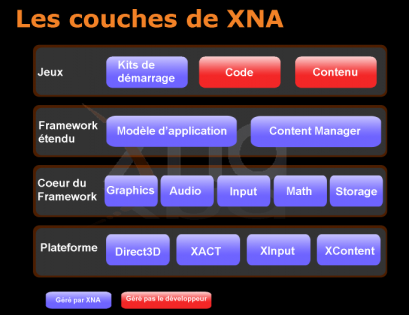
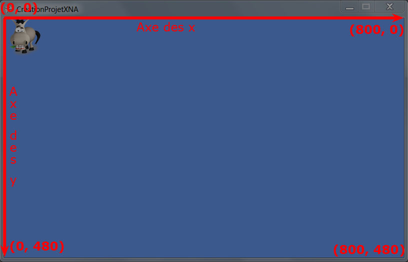

Vous souhaitez développer des jeux pour PC, XBox 360 et Windows Phone 7 facilement sans vous encombrer de diverses librairies externes souvent dures à appréhender ?
XNA est fait pour vous ! ^^
Sa facilité d'utilisation et d'apprentissage en font un choix de marque pour tout projet personnel complexe ou non. Voici ce que vous saurez faire si vous suivez attentivement ce tutoriel :
Afficher du contenu 2D et/ou 3D ;
Interagir avec les actions du joueur ;
Ajouter du son dans vos jeux ;
Ajouter des shaders pour rendre votre jeu 3D visuellement plus beau ;
Gérer des collisions basiques ;
Gérer le réseau pour du multi-joueur ;
Et beaucoup d'autres choses... :D
Je partirai du principe que vous avez quelques bases en C# qui vous seront quasiment indispensables pour comprendre le tutoriel en profondeur. J'essayerai toutefois de détailler autant que possible les notions clefs lors de l'utilisation de XNA.
Voici quelques exemples de jeux réalisés avec XNA 4.
Bienvenue dans le tout premier chapitre de ce big-tuto ! Ce dernier contient essentiellement du contenu informatif, où aucune manipulation n'est requise. Il vous permettra de comprendre ce qu'est XNA et quelle est son utilité. Cela dit, nous parlerons tout de même des composants et logiciels indispensables à la création de jeux avec XNA et les installerons pour être prêts à travailler.
XNA est un acronyme qui signifie… XNA's Not Acronymed (pour les vrais anglophobes, ceci signifie grosso modo XNA n'est pas un acronyme).
C'est un framework (un ensemble d'outils) proposé par Microsoft dans le but de grandement faciliter et accélérer le développement de jeux vidéos. Il s'appuie beaucoup sur un autre framework de Microsoft : le .NET (en réalité il s'agit de la version compacte de ce dernier), offrant un très vaste choix de classes et méthodes aux développeurs. L'objectif de Microsoft avec la sortie de XNA était d'ouvrir le monde du jeu vidéo à des amateurs comme vous et moi.
En effet, avant son apparition, la plupart des "gros" jeux étaient développés en C++ (c'est encore beaucoup le cas aujourd'hui). Ce langage a l'avantage d'être assez bas niveau et donc d'avoir une bonne vitesse d'exécution, seulement voilà ! Qui dit bas niveau dit aussi difficilement exploitable pour nous, amateurs. Pour ceux qui ont déjà tenté l'expérience OpenGL ou DirectX (les deux principales librairies graphiques), vous vous souvenez surement de la difficulté d'initialiser son projet et de créer sa petite fenêtre. ^^ Avec XNA tout cela est automatique ! Il utilise le moteur graphique DirectX mais tout est quasi transparent pour le programmeur en lui proposant des classes et méthodes beaucoup plus faciles à utiliser.
Un autre point important à mon sens qu'apporte XNA est l'ouverture du développement console aux non professionnels. Il existe certes d'autres consoles des kits de développement mais qui ne sont pas toujours des plus légaux. Ici, XNA permet de réaliser relativement facilement un portage de votre jeu vers la Xbox 360 ainsi que vers leur OS mobile Windows Phone 7.
La genèse
Au début de sa recherche dans la simplification des applications à but ludique, Microsoft développa une première encapsulation des fonctions de DirectX : Managed DirectX (MDX). Cette dernière s'appuyait déjà sur le framework .NET et permettait d'accéder aux fonctionnalités de DirectX en orienté objet de manière plus simple mais pas encore suffisamment. La première (et unique) version sortie de MDX fut la 1.1 en 2002 qui est désormais dépréciée en faveur de XNA. Pour Microsoft, MDX fut une bonne première étape qui leur permit par la suite, en reprenant depuis zéro, de pousser la simplification du développement à son extrême avec la sortie de la toute première version de XNA fin 2006. La version 2.0 suivit en décembre 2007 ajoutant le support du réseau puis la version 3.0 ajoutant le support de Zune en octobre 2008. Ensuite est arrivée la version 3.1 sortie en Juin 2009. La toute dernière en lice et donc celle avec laquelle nous allons travailler est la 4.0 qui apporte une grosse nouveauté : le développement de jeux pour Windows Phone 7 !
XNA sous forme de couches
Voici un graphique qui synthétise l'architecture du framework XNA sous forme de couches:

Ce graphique est plutôt simple à comprendre, tout en bas se trouvent les composants les plus bas niveau (donc les plus proches du hardware). Ces derniers servent à accéder aux ressources de l'ordinateur et à les utiliser (Direct3D à la carte graphique, XACT à la carte son, etc...). Ces composants sont donc totalement encapsulés (recouverts) par le Cœur du framework de XNA. Ce dernier contient les espaces de nom de XNA que nous utiliserons par la suite et qui contiennent toutes les méthodes et classes mises à disposition des développeurs.
C'est quoi un espace de nom ?
Un espace de nom en C# est en quelque sorte une boite qui permet de regrouper de façon logique des classes afin de s'y retrouver beaucoup plus facilement. Si vous souhaitez plus de détails à ce propos, je vous conseille d'aller lire un tutoriel traitant le C# et le framework .NET.
Je pense que je n'ai pas besoin de détailler à quoi correspondent chacun de ces espaces de nom, même sans être anglophone c'est compréhensible. ^^ On peut donc remonter une couche de ce modèle pour arriver à celle intitulée Framework Étendu. Celle-ci inclut le modèle d'application et le Content Manager. Tout d'abord le modèle d'application est un moyen de simplifier la structure générale du jeu. Pour ceux qui ont ne serait-ce qu'une petite expérience dans le développement du jeu vidéo, vous savez qu'il est quasiment obligatoire d'insérer une "boucle de jeu". Celle-ci permet entre autres de ré-afficher l'image à l'écran en prenant en compte tous les éléments qui ont changé depuis le dernier affichage (vie du joueur, position du joueur, etc...).
Ce schéma récurrent d'un jeu à l'autre est ce que l'on appelle le modèle d'application ! Cette boucle du jeu est entièrement gérée par XNA, ce qui permet de nous consacrer entièrement sur le code du jeu en lui-même. Nous étudierons plus en détail cette boucle de jeu dans le chapitre suivant.
Ensuite, le Content Manager est une technologie intégrée à XNA qui permet d'ajouter très simplement du contenu à notre jeu, qu'il s'agisse d'images, de sons ou même de modèles 3D. Nous verrons le rôle du Content Manager et plus généralement du "Content Pipeline" très rapidement dans ce tutoriel.
Pour finir, la dernière couche du modèle représente celle que nous, développeurs, pouvons modifier. Il s'agit donc du code, du contenu et des starters kit.
C'est quoi un Starter Kit ?
Un Starter Kit c'est tout simplement un Kit de Démarrage. :p Plus concrètement, il s'agit de petits jeux pré-faits à télécharger dont le code source est disponible. Ceci permet d'avoir une solide base et de le modifier à votre guise pour en faire votre propre jeu ! Cela dit, je vous préviens que nous ne partirons pas d'un Starter Kit, je préfère que vous souffriez en partant de rien. :pirate: Après tout, nous ne sommes pas des zéros pour rien ! Il faut donc partir de… zéro !
Configuration minimale
Voici un point important à connaitre avant de se lancer ! XNA utilise des technologies assez récentes, c'est pourquoi la configuration doit avoir un certain minimum. Pas d'inquiétude tout de même il ne faut pas une bête de course pour pouvoir utiliser cette technologie. En fait la seule chose vraiment importante est d'avoir une carte graphique compatible DirectX 9.0 et supportant les Shaders Model 2.0 minimum. Il serait même largement mieux que celle-ci supporte les Shaders Model 3.0 puisque certains Starters Kit que vous trouverez sur Internet en ont besoin pour pouvoir fonctionner.
Je vous ai déjà présenté le plus gros avantage de XNA, je parle évidemment de sa facilité d'utilisation et la rapidité avec laquelle il est possible de développer un jeu. Je ralentis tout de même vos ardeurs de Game Developers en herbe, n'espérez pas recoder World of Warcraft ou je ne sais quel autre jeux ultra récent, XNA c'est bien mais pas magique. ;) Il faut encore et toujours de grandes équipes capables de couvrir tous les domaines du jeu vidéo, comme le graphisme du jeu, le scénario, le gameplay, le développement (ce qui nous intéresse) et j'en passe, pour pouvoir prétendre à un jeu du niveau des grands éditeurs actuels !
C'est bien beau tout ça, tu nous dis que c'est facile et rapide mais tu nous a toujours pas dit pourquoi…
Justement j'allais y venir. La simplicité de XNA réside dans une très bonne encapsulation des fonctions de DirectX. Cela signifie qu'il existe de (très) nombreuses fonctions et classes toute faites et prêtes à être utilisées qui font tout (ou presque) le travail dur et fastidieux pour nous ! Ce qui nous permet de nous consacrer uniquement sur la partie jeu de notre projet (déplacer le personnage, gérer les ennemis, alliés, sons, etc…).
À noter tout de même que XNA permet de pousser ses réalisations avec des techniques avancées telles que la création de "plugins" permettant d'importer d'autres types de fichiers que ceux par défaut ou des techniques avancées pour l'affichage des modèles 3D en programmant directement la façon dont la carte graphique va traiter les modèles 3D.
Le deuxième avantage de XNA est son coté multi-plateforme. Ce que j'entends par multi-plateforme est la possibilité de faire un portage très simplement sur XBox 360, Zune et même Windows Phone 7 avec la version 4.0. Je ne traiterai pas du tout le portage sur Zune (qui soit dit en passant est très peu connu) mais je ferai probablement un chapitre pour les détenteurs de Xbox360 ainsi qu'un autre pour le développement Windows Phone 7.
Pour ceux qui pensaient au multi-plateforme Windows/Linux/Mac, désolé ce n'est pas ça. :p Étant donné que XNA utilise DirectX lui-même uniquement exploitable sur les systèmes d'exploitation Windows, le portage sur d'autres OS est très mauvais (voire impossible). Il existe toutefois un projet appelé MonoXNA qui a pour but de fournir une implémentation multi-plateforme de XNA en utilisant OpenGL plutôt que DirectX. Cependant il semblerait que le projet ne soit plus du tout actif. Vous pouvez toujours consulter le site officiel de MonoXNA et la page Google Projects correspondante.
Enfin, sachez que vous trouverez une très grande communauté de passionnés pour vous aider dans vos projets et répondre à vos interrogations. Voici quelques liens utiles à connaitre.
xna-connection : Site en français qui regorge d'articles, de ressources et de tutoriaux pour les débutants comme pour les confirmés avec des techniques simples comme plus avancées.
Le msdn de Microsoft : C'est en quelque sorte la bible de XNA ^^ puisqu'il s'agit de la documentation officielle. En plus, vous avez de la chance elle est traduite en français, aucune excuse donc pour ne pas aller la consulter avant de poser des questions !
App Hub : Je vais vous en parler plus en détail dans la section juste après.
Quelques infos utiles
App Hub est LE site indispensable à ceux qui veulent créer et faire connaitre leur jeu. Il contient des tutos pour débuter dans lesquels vous apprendrez à créer un jeu basique en 2D puis un en 3D. Ce sont des tutoriaux vidéos en anglais assez facilement compréhensibles si vous n'êtes pas anglophobe. Vous y trouverez également un forum pour toutes vos questions tout en pouvant les cibler en choisissant la partie du forum adaptée.
En plus de cela, vous pourrez télécharger depuis ce site de nombreux samples (exemples) qui abordent certains points clefs pour la création d'un jeu.
Enfin, c'est sur ce site que vous aurez besoin de vous inscrire et payer votre abonnement (gratuit pour les étudiants via le programme DreamSpark) afin de publier votre jeu sur Xbox ou Windows Phone 7.
Voici la liste des logiciels et outils dont vous aurez besoin pour commencer à programmer en utilisant XNA.
Le framework .NET 4.0 : Il s'agit de la brique de base .NET qui fournit de nombreuses classes utilisées par tout programme C# ou VB.NET. Il permet par exemple d'écrire sur le système de fichier, de manipuler des listes de données, etc…
Visual C# 2010 Express : Ceci est l'IDE, c'est donc le logiciel sur lequel nous allons passer le plus clair de notre temps afin de programmer. La version express est gratuite et suffisante pour pouvoir développer un jeu avec XNA. Évidemment, les versions Professionnelle et Ultimate de Visual Studio peuvent être utilisées (et sont gratuites pour les étudiants via le programme Dreamspark). À savoir que j'utiliserai moi-même la version Ultimate anglaise de Visual Studio lorsque j'aurai des screens à faire mais il devrait n'y avoir que très peu de différence si vous n'avez pas la même. ;) Je vous conseille de prendre également la version anglaise pour la simple et bonne raison que la plupart des tutoriaux ou aides que vous trouverez lors de vos développements seront en anglais.
XNA Game Studio 4.0 : C'est le framework en lui même, concrètement il s'agit des dlls qui seront utilisées par votre projet et qui vous permettront d'accéder à toutes les classes fournies par XNA. Cet élément contient également un plugin pour Visual C# / Visual Studio qui va vous permettre de créer des projets XNA mettant en place l'architecture de base (nous verrons cela plus en détail juste après).
Installation
Pour installer Visual C# Express, vous devez suivre le lien que je vous ai donné puis choisir votre langue. Une fois ceci fait vous pouvez télécharger le fichier vcs_web.exe.
Lorsque le fichier est entièrement téléchargé, il ne vous reste plus qu'à l'exécuter en suivant l'assistant qui vous permettra entre autres de configurer le chemin où s'installera le logiciel. À noter qu'une fois que vous avez renseigné toutes les informations, le logiciel de Microsoft s'occupe de télécharger Visual C# 2010 Express et de l'installer à la suite.
Pour XNA Game Studio, c'est encore plus simple. En effet le lien vous amène directement sur la page de téléchargement du composant, vous n'aurez alors qu'à le télécharger puis l'exécuter pour faire l'installation comme n'importe quel logiciel !
Maintenant que nous avons vu la partie purement théorique, qui vous permet de savoir dans quoi vous vous lancez, et que les outils sont correctement installés pour bien commencer, il n'y a plus qu'à ! Nous allons voir dès le prochain chapitre notre premier projet XNA qui nous permettra de comprendre comment tout jeu fait avec ce framework est architecturé.
Bien ! Maintenant que la partie informative est terminée et que tous les outils nécessaires ont été installés, nous allons pouvoir commencer à voir comment est bâtie toute la machinerie XNA. Le but de ce chapitre est que vous compreniez bien comment est architecturé un jeu afin de partir sur de bonnes bases, il ne faut donc pas le négliger ! ;)
Cette étude se fera d'abord à travers une approche théorique puis par l'étude du code généré par défaut dans les projets XNA pour bien comprendre en pratique comment le tout s'agence.
L'installation de XNA Game Studio 4 a, en plus d'avoir installé les librairies (dlls) de développement, ajouté un petit add-on à votre Visual C# qui permet directement de créer des projets XNA depuis l'IDE. Concrètement, le fait de créer un tel projet permet d'avoir dès sa création toutes les DLLs nécessaires référencées et un code généré mettant en place une architecture de base commune à tous les jeux faits avec XNA. Il "suffit" alors de compléter les trous pour créer notre jeu !
Voyons sans plus attendre comment créer un projet XNA. Allez dans File > New > Project, vous aurez alors la fenêtre de création de projet qui apparaîtra.
Vous pouvez remarquer qu'il y a ici une section XNA Game Studio 4.0 (entourée en bleu sur le screenshot), c'est ce que l'add-on nous a rajouté et c'est donc cette section qui va contenir nos templates de projet à utiliser pour la création de nos jeux.
Vous remarquez que plusieurs templates sont disponibles en fonction de la plateforme sur laquelle vous voulez développer, plus d'explications sur ces différents types de projets juste après. On va ici faire un projet Windows Game 4.0 pour analyser la structure de base d'un jeu. Choisissez donc le template approprié, mettez un nom à votre projet et votre solution puis vous pouvez accepter et laisser Visual C# créer le projet pour vous. Vous devriez désormais avoir ceci dans votre Visual C# / Visual Studio.
Nous verrons à quoi sert le code généré un petit plus tard dans ce chapitre, pour l'instant, on peut observer dans l'explorateur de solution que le template utilisé a en fait créé deux projets :
NomDeVotreProjet : Ceci est le projet qui contiendra le code qui servira à la logique de votre jeu et à son dessin ;
NomDeVotreProjetContent : Ceci est un projet de contenu, c'est dans celui-ci que l'on mettra tout le contenu que notre jeu utilisera (images, musiques, sons, modèles 3D, etc…). On peut d'ailleurs remarquer que l'autre projet de la solution référence celui-ci dans sa section ContentReference.
Les différents types de projet
Lorsque vous créez un nouveau projet via l'add-on de XNA Game Studio 4.0, vous avez pu remarquer que plusieurs templates sont à votre disposition en fonction de ce que vous souhaitez créer. Voici un petit screen pour ceux qui auraient la mémoire courte. ^^
Nous disposons donc de pas moins de 8 projets différents que l'on peut classer en 4 catégories (si les projets Windows Phone n'apparaissent pas, il vous manque probablement les Windows Phone Developer Tools récupérables ici).
<Plateforme> Game : Cette catégorie comprend donc les templates Windows Phone Game, les Windows Game et les Xbox360 Game. Tous les projets créés depuis ce type de template vont vous permettre à la compilation de générer un exécutable qui pourra être utilisé sur la plateforme choisie. On aura donc au résultat de la compilation un .exe pour Windows, un .xap pour les Windows Phone 7 et également un .exe pour la Xbox360 (que vous ne pourrez pas lancer depuis votre ordinateur, il faudra le déployer sur votre Xbox360).
<Plateforme> Game Library : Cette catégorie comprend donc les templates Windows Phone Game Library, les Windows Game Library et les Xbox360 Game Library. Ces templates vont ici aussi cibler une plateforme en particulier mais aucun exécutable ne sera généré à la compilation, au lieu de ça vous aurez une DLL que vous pourrez référencer dans votre jeu exécutable (la catégorie juste avant). Plus précisément cela va vous permettre par exemple de développer un moteur physique et ensuite de le réutiliser simplement en le référençant dans un autre projet. On peut faire l'analogie avec le Class Library classique que l'on trouve par défaut avec Visual C# à la différence que l'environnement est pré-configuré pour le développement avec XNA (les bonnes références sont ajoutées par exemple).
Content Pipeline Extension Library : Ce type de projet a un but bien particulier puisqu'il va permettre d'étendre les fonctionnalités de l'importateur de contenu de XNA. Ceci va nous permettre de créer des importateurs de fichiers personnalisés, nous autorisant à créer notre propre format de fichier. Si ceci est bien abstrait pour l'instant, ce n'est pas grave vous comprendrez mieux quand on commencera à ajouter du contenu à nos jeux et un chapitre entier sera dédié à l'importation d'un type de fichier personnalisé.
Empty Content Project : Ce type là vous l'avez déjà rencontré ! Et oui il s'agit de la même chose que ce que créent les projets de type <Plateforme> Game, ils vont donc nous permettre de mettre du contenu dans nos jeux pour peu qu'ils soient référencés dans notre jeu en tant que Content Reference.
Maintenant que tout ceci est éclairci, nous allons passer à l'analyse de la structure de base commune à tous les jeux faits avec ce framework !
L'événementiel, vous y avez TOUS (et j'insiste bien ;) ) été confrontés. Que ce soit de la plus basique utilisation de l'ordinateur à l'ingénierie informatique, dès que vous ouvrez un logiciel "standard", l'événementiel est présent.
Alors qu'est-ce que c'est ? Et bien comme son nom l'indique c'est un système basé sur des événements. Prenons l'exemple de votre navigateur internet (que vous êtes sûrement en train d'utiliser pour regarder ce tuto), il ne se passe rien si vous ne cliquez sur rien avec votre souris, le navigateur est donc en attente d'une action de votre part. En réalité, ceci n'est pas tout à fait exact puisqu'il se passe très souvent quelque chose que l'on ne voit pas (mises en cache, fonctions javascripts,…) mais nous allons faire abstraction de ces opérations pour l'explication.
Pour revenir à l'exemple du navigateur, lorsque vous cliquez sur la flèche précédente, l'action de ce clic vous ramène vers votre dernière page vue, vous avez donc déclenché un événement qui est géré par le programme (clic sur un bouton) et qui va déclencher une fonction pour faire l'action désirée. Il existe un très grand nombre d'événements capturables par les programmes allant jusqu'au déplacement d'un pixel de la souris.
Dans ce scénario, votre application va signaler au système d'exploitation quel(s) événement(s) l'intéresse(nt) et quelle(s) fonction(s) associée(s) doit(vent) être exécutée(s), il se met ensuite en "pause" et va attendre que votre système d'exploitation lui signale que l'utilisateur a cliqué à tel endroit, a bougé la souris, a changé le texte d'une textbox, etc… C'est donc une attente passive.
Pourquoi utiliser un tel concept qui requiert la participation du système d'exploitation ?
Tout simplement pour économiser votre processeur, en effet imaginez que votre logiciel surveille lui-même en permanence si une action de l'utilisateur est effectuée, ce dernier utiliserait 100% de votre processeur alors imaginez avec 2, 3, 10 applications en même temps, cela deviendrait très vite ingérable et votre ordinateur ne serait pas du tout fluide.
Okay, je vois le truc mais en quoi ceci est bien pour un jeu ?
Et bien ça ne l'est pas du tout ! ^^ En effet, bien que ce concept soit très adapté pour des applications, il ne l'est pas du tout pour un jeu : imaginez qu'il faille attendre que le joueur appuie sur une touche pour que les monstres bougent ou qu'il faille bouger la souris pour rafraîchir l'affichage, je pense que vous voyez tous que ceci n'est pas envisageable :lol: , c'est pourquoi XNA utilise une toute autre architecture qui est une boucle de jeu, que nous allons voir tout de suite.
Qu'est-ce que la boucle de jeu ?
La boucle de jeu est un autre concept de programmation qui, vous l'aurez compris, va être utilisé dans XNA. Ici on ne va pas attendre un événement ou une action du joueur, on va être en constante activité et on va tout le temps ou presque faire quelque chose. Alors comme je vous l'ai dit tout à l'heure ceci consomme pas mal de processeur, voire tout votre processeur mais dans le cas d'un jeu, il est rare que 2 d'entre eux soient lancés en même temps. En plus de cela, s'il s'avère que c'est le cas, XNA prend en compte le fait que le jeu n'est pas l'application active et diminue donc sa consommation.
Le principe de base réside dans une boucle infinie dans laquelle à chaque tour notre jeu va se mettre à jour tant au niveau des positions, des vitesses, des actions effectuées par le joueur que par le travail de la carte graphique au niveau du dessin du jeu.
Si vous êtes un joueur, vous êtes d'ailleurs très probablement familiarisé avec le nombre de tour qu'effectue cette boucle à la seconde. En effet, je ne parle de rien d'autre que les fps (frame per second en anglais) ou ips (image par seconde en français) qui définit bel et bien le nombre de fois que le jeu est dessiné à la seconde.
À noter que pour avoir une image fluide il faut au strict minimum 24 images par seconde (pour la télé) et que 30 sont vivement conseillés pour un jeu. Il est même fortement recommandé de monter jusqu'à 60 dans le cas de jeux à forte action (First Person Shooter par exemple) sans quoi le joueur risque de ressentir l'effet de "lag". À noter d'ailleurs que XNA par défaut bloque les fps à 60 puisqu'il n'est pas en soit utile de monter plus haut, il est évidemment possible de les débloquer (il s'agit là aussi d'un paramètre qui doit vous parler : la synchronisation verticale).
C'est à peu près tout pour la boucle de jeu, de toute façon nous reverrons ceci juste après avec un peu plus de concret en s'appuyant sur le code généré par XNA.
Comme je l'ai dit juste avant, XNA utilise le concept de boucle de jeu. Ainsi, dès lors que vous créez un projet XNA, toute une architecture est mise en place afin d'être prêt à l'emploi pour un jeu. Vous pouvez d'ailleurs lancer le projet que l'on a fait juste avant (F5 pour lancer avec le debug ou Ctrl+F5 pour le lancer sans le debug) qui contient donc uniquement le code généré par Visual C# et observer votre premier jeu tourner ! :magicien:
La première fenêtre de jeu
Alors évidemment rien d'exceptionnel, c'est juste une fenêtre bleue mais nous allons voir maintenant qu'il se passe en réalité beaucoup de choses avant et pendant l'affichage de cette dernière. Voici un schéma qui représente le cycle de vie d'un jeu XNA depuis son lancement jusqu'à sa fermeture.
Schéma simplifié du cycle de vie d'un jeu XNA
Tout commence avec l'instanciation d'un objet de type Game, ou plus exactement un enfant de cette classe, on exécute donc son constructeur. Une fois cette opération terminée, la mise en place du contexte du jeu est démarrée avec d'abord la phase d'initialisation qui va nous servir, comme son nom l'indique, à initialiser notre jeu (position joueur, position des ennemies, vie, etc.). Vient ensuite la phase du chargement du contenu (LoadContent) qui elle, va nous permettre de charger les ressources utiles. Globalement cela correspond au chargement de ce qui se trouve dans notre projet de contenu et qui est nécessaire dès le chargement du jeu.
Lorsque tout ceci est fait, le jeu va réellement entrer dans sa phase principale puisqu'il va entrer dans la boucle de jeu ! En effet il s'agit d'une boucle pseudo infinie qui va s'exécuter tant que le jeu s'exécute. Elle est séparée en 2 parties distinctes selon l'architecture XNA, un peu à l'image de l'initialisation et du chargement de contenu. On a une première partie qui va servir à mettre à jour uniquement la logique du jeu (bouger le joueur, faire perdre de la vie, gérer les collisions) dans la partie Update alors que la partie Draw se charge d'afficher le résultat de toutes ces opérations en dessinant les éléments du jeu (images, modèles 3D, etc..).
Je tiens à préciser tout de même que ce schéma montre de façon simplifiée comment XNA fonctionne car en réalité Update et Draw ne s'exécutent pas de façon séquentielle. Chaque méthode est exécutée dans un thread séparé mais ces threads étant synchronisés, on a l'impression que les méthodes sont exécutées l'une après l'autre.
Quel intérêt du coup de se compliquer la vie en les mettant dans deux threads séparés ? o_O
La synchronisation des deux threads est effective lorsque le jeu n'est pas trop gourmand en ressource et qu'il est bloqué à 60 fps mais lorsque par exemple vous avez des tonnes de choses à dessiner et que votre méthode Draw ne peut tourner qu'à 50 fps, cette séparation d'exécution est indispensable pour que Update continue de faire évoluer la logique de votre jeu à son propre rythme !
Bien évidemment cette boucle n'est pas complètement infinie sinon on ne pourrait jamais fermer le jeu :lol: , on peut donc en sortir ce qui signifie généralement l'extinction du programme. La phase d'extinction est composée du déchargement de contenu qui va nous permettre d'enlever de la mémoire les éléments que nous avons chargé nous-même (en sachant que normalement le Garbage Collector et le gestionnaire de contenu du Framework se chargent pour nous de faire le ménage des ressources non utilisées, c'est donc dans des cas assez particuliers que nous utiliserons cette méthode).
Vous voyez donc que les apparences sont trompeuses ! Bien que le programme n'affiche qu'une fenêtre bleue, il se passe en réalité beaucoup de choses sous le capot ! :p Maintenant que nous avons vu la partie théorique, il est grand temps de mettre les mains dans le cambouis en allant observer le code.
Les méthodes dans le code
On peut voir dans notre explorateur de solution que nous avons 2 fichiers présents : Game1.cs et Program.cs. Prenons d'abord le fichier Program.cs et observons son contenu.
using System;
namespace CreationProjetXNA
{
#if WINDOWS || XBOX
static class Program
{
/// <summary>
/// The main entry point for the application.
/// </summary>
static void Main(string[] args)
{
using (Game1 game = new Game1())
{
game.Run();
}
}
}
#endif
}
On a d'abord tout ce qui est des plus classiques dans un fichier C#, un ensemble de clauses using (ici une seule) puis un namespace et enfin notre classe Program. On peut remarquer la présence d'une instruction préprocesseur avec #if WINDOWS || XBOX qui n'est pas importante pour l'instant, elle est surtout utilisée lors des portages de jeux sur plusieurs plateformes.
À l'intérieur de la classe Program, nous avons la méthode Main qui est définie, il s'agit donc bien du point d'entrée de notre programme, ce qui va être fait en premier à son exécution. Alors que fait cette méthode ? Elle instancie la classe Game1 (que nous analyserons juste après) dans une clause using assurant une libération complète des ressources à la fin de son utilisation. Enfin, une fois que Game1 est instanciée, on lance la méthode Run de ce dernier qui va déclencher tout le processus que nous avons vu précédemment (Initialize, LoadContent, Update,…).
Analysons maintenant le contenu de notre deuxième fichier : Game1.cs. Tant que nous y sommes, je vous conseille fortement de renommer cette classe pour mieux s'y retrouver ultérieurement. Pour cela, allez dans l'explorateur de solution et faites un clic droit sur votre fichier puis Rename. Une fois le fichier renommé, Visual C# va rechercher automatiquement les occurrences du même nom dans le code pour les modifier si vous répondez oui à la boite de dialogue qui apparaît. Je l'ai personnellement renommé FirstGame.cs.
Voyons donc le code de ce fichier petit bout par petit bout. On a en premier une fois de plus ce qui est classique à tout fichier C# : de nombreuses clauses using qui permettent d'intégrer l'utilisation du Framework XNA et le namespace dans lequel on travaille.
using System;
using System.Collections.Generic;
using System.Linq;
using Microsoft.Xna.Framework;
using Microsoft.Xna.Framework.Audio;
using Microsoft.Xna.Framework.Content;
using Microsoft.Xna.Framework.GamerServices;
using Microsoft.Xna.Framework.Graphics;
using Microsoft.Xna.Framework.Input;
using Microsoft.Xna.Framework.Media;
namespace CreationProjetXNA
{
...
}
Commencent ensuite les choses importantes avec la création de la classe principale de notre jeu. On remarque que celle-ci hérite (je ne reviens pas sur l'héritage, si cette notion vous est totalement étrangère je vous conseille de lire un tutoriel sur le C# en général) de la classe Game. La classe Game est fournie par le Framework XNA et c'est elle qui met en place l'architecture que nous avons vue juste avant. Il faut ici vraiment comprendre que c'est le cœur de notre jeu, le pilier central sur lequel nous allons progressivement bâtir notre jeu.
/// <summary>
/// This is the main type for your game
/// </summary>
public class FirstGame : Microsoft.Xna.Framework.Game
{
...
}
Continuons en regardant ce que contient cette classe, si vous avez bien suivi ce que j'ai dit au début de ce chapitre, ce que nous allons voir maintenant n'est que de la révision mais plus concrète puisqu'il y a du code à l'appui.
GraphicsDeviceManager graphics;
SpriteBatch spriteBatch;
public FirstGame()
{
graphics = new GraphicsDeviceManager(this);
Content.RootDirectory = "Content";
}
Ce code est la déclaration des attributs de la classe FirstGame ainsi que le constructeur de la classe. Les deux attributs présents par défaut sont :
Un GraphicsDeviceManager : Cet objet va faire l'interface entre vous et votre carte graphique. Vous allez donc pouvoir régler certains paramètres de rendu de la carte graphique mais aussi plus simplement la taille de la fenêtre dans laquelle dessiner le jeu ;
Un SpriteBatch : Cet objet va tout simplement vous servir à dessiner des images ou des chaînes de caractère sur votre écran de jeu.
Le constructeur de la classe se charge d'instancier le GraphicsDeviceManager en lui passant en paramètre le Game associé (ici this puisque nous sommes dans la classe du jeu) et va ensuite définir grâce à la propriété Content de la classe parente Game où chercher le contenu quand nous lui demanderons de charger une ressource (ici cela définit la racine de notre projet de contenu).
Ensuite viennent les méthodes vues dans le schéma de la boucle de jeu. À noter que toutes ces méthodes ont l'attribut override accolé, ce qui signifie qu'elles sont déjà définies dans la classe parente (Game) et qu'on ne fait que les remplacer.
/// <summary>
/// Allows the game to perform any initialization it needs to before starting to run.
/// This is where it can query for any required services and load any non-graphic
/// related content. Calling base.Initialize will enumerate through any components
/// and initialize them as well.
/// </summary>
protected override void Initialize()
{
// TODO: Add your initialization logic here
base.Initialize();
}
/// <summary>
/// LoadContent will be called once per game and is the place to load
/// all of your content.
/// </summary>
protected override void LoadContent()
{
// Create a new SpriteBatch, which can be used to draw textures.
spriteBatch = new SpriteBatch(GraphicsDevice);
// TODO: use this.Content to load your game content here
}
/// <summary>
/// UnloadContent will be called once per game and is the place to unload
/// all content.
/// </summary>
protected override void UnloadContent()
{
// TODO: Unload any non ContentManager content here
}
/// <summary>
/// Allows the game to run logic such as updating the world,
/// checking for collisions, gathering input, and playing audio.
/// </summary>
/// <param name="gameTime">Provides a snapshot of timing values.</param>
protected override void Update(GameTime gameTime)
{
// Allows the game to exit
if (GamePad.GetState(PlayerIndex.One).Buttons.Back == ButtonState.Pressed)
this.Exit();
// TODO: Add your update logic here
base.Update(gameTime);
}
/// <summary>
/// This is called when the game should draw itself.
/// </summary>
/// <param name="gameTime">Provides a snapshot of timing values.</param>
protected override void Draw(GameTime gameTime)
{
GraphicsDevice.Clear(Color.CornflowerBlue);
// TODO: Add your drawing code here
base.Draw(gameTime);
}
Voici la liste des méthodes que l'on trouve et leurs explications respectives.
Initialize : Première méthode appelée lorsque l'on exécute la méthode Run() de la classe Game. Elle permet de mettre en place tout la logique de départ de notre jeu en initialisant les variables aux valeurs voulues.
LoadContent : Seconde méthode appelée dans la logique du Run(). Elle permet de charger en mémoire RAM les ressources dont nous aurons besoin au lancement de notre jeu. Ceci va de la simple petite image qui représente un chiffre à un gros modèle 3D en passant par les sons et musiques. Ici le SpriteBatch est instancié puisqu'il s'agit d'une ressource assez importante qui permettra de dessiner les images.
UnloadContent : Méthode appelée lors de la fermeture du jeu. Elle permet de décharger tout le contenu qui n'aurait pas été chargé via le gestionnaire de contenu offert par XNA ainsi que de supprimer de la mémoire toute variable ne pouvant être traitée par le Garbage Collector.
Update : Une des deux méthodes faisant partie de la boucle de jeu. Celle-ci est utilisée pour mettre à jour la logique du jeu. La logique comprend par exemple tout ce qui est position du joueur, position des monstres, calcul des collisions, etc... On peut trouver par défaut un code qui sert à vérifier si le joueur appuie sur le bouton back de sa manette de Xbox auquel cas, on quitte le jeu et ceci même si c'est un projet Windows Game ! ^^
Draw : La deuxième méthode faisant partie de la boucle de jeu. À l'inverse de Update, cette méthode ne va pas du tout s'occuper de la logique du jeu mais plutôt de dessiner le résultat de la logique calculée par Update. C'est donc elle qui va se charger de « communiquer » avec la carte graphique pour lui donner les choses à dessiner aussi bien en 2D qu'en 3D. Par défaut dans cette méthode, une seule action est effectuée: le nettoyage de votre écran. La méthode Clear() prend une couleur en paramètre (d'où le joli bleu que l'on voit au lancement du jeu), vous pouvez vous amuser à modifier cette couleur, XNA propose une grosse panoplie de couleurs toutes prêtes.
Pourquoi respecter cette architecture ?
Il m'a semblé judicieux de bien insister sur l'importance de respecter l'architecture proposée par le Framework. En effet, rien ne vous empêche de mettre votre code un peu partout, par exemple en mettant la logique et le dessin de votre jeu dans la même méthode mais c'est évidemment déconseillé.
La première raison est que cette architecture a été pensée par des cadors du jeu vidéo chez Microsoft, je pense donc que l'on peut leur faire confiance. :)
En plus de cela le code en interne est pensé et optimisé autour de cette architecture, donc si vous ne la respectez pas votre jeu risque de lagger sans raison apparente et cela risque de générer des comportements inattendus.
Enfin, je trouve que cette architecture permet de bien se repérer grâce à la séparation de la logique et de la partie spécifique au rendu, c'est assez dur à faire comprendre pourquoi, ça se ressent quand on expérimente avec le Framework, mais croyez-moi quand vous développerez vous gagnerez du temps grâce à ça. Je n'ai donc qu'un conseil à vous donner pour le moment : respectez bien cette architecture. :)
Si pour l'instant ceci reste un peu abstrait (j'espère quand même que vous avez compris l'essentiel), vous verrez rapidement tout au long de ce tutoriel quel code doit être mis où.
Voila un chapitre bien rempli de terminé et aussi une bonne chose de faite ! :) Ceci est la base de la base, j'espère donc que vous avez bien assimilé les informations de ce chapitre car elles vous seront très utiles pour comprendre plus tard pourquoi on fait ci ou pourquoi on fait ça.
Après avoir observé notre premier projet vide ^^ , nous allons commencer à apprendre à le remplir pour pouvoir construire un vrai jeu. C'est ce que je vous propose dans la suite du tutoriel mais avant ça : QCM ! (Et tous ceux qui n'ont pas 20… :pirate: ).
Vous avez eu la chance de lancer votre premier jeu fait avec XNA dans le chapitre précédent ! Je conçois que la simple fenêtre bleue n'avait rien d'exceptionnel mais elle a le mérite de nous avoir permis de comprendre déjà ce qu'il se passe de base. :)
Il est maintenant grand temps d'ajouter un peu de contenu à notre jeu ! Nous allons commencer par le chargement puis l'affichage d'une simple image dans notre fenêtre et nous verrons comment la faire bouger.
Vous pourrez donc commencer à apprécier la rapidité avec laquelle on peut effectuer ce genre de choses. ;)
Quand on parle de gestion de contenu en XNA, on ne peut pas passer à coté du Content Pipeline.
Qu'est-ce que c'est et à quoi ça sert ?
Comme son nom l'indique c'est un "tuyau" dans lequel vous allez insérer vos ressources (aussi appelé assets) et qui va vous donner quelque chose d'exploitable dans le code à la sortie. Cette grosse brique de XNA va intervenir à différentes phases de notre projet : à son élaboration, à sa compilation et à son exécution. Voici un petit schéma qui vous montre tout le processus qui permet d'utiliser des ressources dans son jeu.
L'importation
Le processus d'importation va vous permettre tout simplement d'ajouter votre fichier de ressource dans votre projet de contenu. Les formats de fichier qui sont pris en compte par défaut dans XNA sont les suivants :
images: .bmp , .jpg, .png, .dds et .tga ;
audio: .mp3, .wav, .wma et .xap ;
vidéos: .wmv ;
modèles 3D: .fbx et .x ;
effets: .fx.
Vous voyez donc qu'il y a un large choix de formats par défaut que vous pouvez utiliser dans vos projets et si un dont vous avez besoin n'est pas pris en charge par XNA il est possible d'étendre le Content Pipeline pour créer ses propres importateurs (mais nous verrons cela dans un chapitre qui y est dédié).
Je vous donne le fichier que je vais utiliser par la suite (il s'agit de notre bon vieux Zozor que vous pouvez admirer en haut à droite du site ^^ ).
Pour importer un fichier, rien de plus simple, vous avez plusieurs possibilités. La première est tout simplement de faire un drag and drop de votre fichier depuis l'explorateur Windows vers votre projet de contenu.
La deuxième solution consiste à faire un clic droit sur votre projet de contenu puis Add et enfin Existing Item…. Vous n'avez plus qu'à aller chercher votre fichier là où il se trouve et cliquer sur Add. :)
Vous devriez donc maintenant voir votre fichier dans le solution explorer !
La compilation
Maintenant que notre fichier est ajouté à notre projet de contenu, celui-ci sera traité par Visual Studio lors de la compilation. Le chargement d'assets dans un jeu étant une des parties les plus consommatrices de ressource sur un ordinateur voire la plus consommatrice, il est primordial que cette opération soit bien gérée et XNA s'en occupe évidemment pour nous ! :D
Pour cela il utilise un format de fichier bien à lui : les .xnb. Ce dernier est un format de fichier optimisé pour le chargement dans le jeu et toute ressources mises dans un projet de contenu (que ce soit des images, du son ou autre) sont transformés en .xnb à la compilation.
Ce sont d'ailleurs ces fichiers-là qu'il faudra que vous donniez en même temps que l'exécutable de votre jeu si vous le diffusez et non les ressources de base que vous avez pu utiliser (jpg, fbx, ...).
Le processus de compilation est assez complexe c'est pourquoi nous n'allons pas le voir en détail ici mais sachez que c'est la partie extensible du Content Pipeline, c'est donc elle qui nous permettra de charger nos propres formats de fichier.
Le chargement
Le chargement de nos ressources va être la partie la plus appréciable tant elle est facile grâce à XNA et son Content Pipeline et plus spécifiquement le Content Manager (qui est une sous partie du Content Pipeline dédié au chargement des assets à l'exécution). En effet, quel que soit le type fichier que vous souhaitez charger, il faudra utiliser la même méthode ! Le Framework se charge tout seul de déterminer le type de fichier et de le charger pour pouvoir ensuite l'utiliser.
Voici la fameuse méthode à utiliser : Content.Load<T>("Asset Name de votre contenu").
Content est ici une propriété de la classe principale Game et donne accès au Content Manager. Le T va représenter ici le type d'asset que vous souhaitez charger et enfin l'argument de la méthode est le nom de votre ressource sans son extension (dans mon cas ce sera "zozor6").
Si ceci est encore flou, ne vous inquiétez pas, c'est normal et nous allons appliquer tout ça dans le chapitre suivant en affichant notre zozor dans notre fenêtre bleue. ;)
Bien ! Maintenant que l'on sait comment nos fichiers sont importés dans nos jeux on va pouvoir afficher notre zozor. :)
Afin d'afficher l'image, nous allons procéder en 4 étapes: charger l'image en mémoire, déclarer que l'on va dessiner des images, dessiner l'image et enfin déclarer que l'on a terminé de dessiner.
Chargement en mémoire
Comme nous l'avons vu précédemment nous allons pouvoir charger n'importe quel asset avec la méthode Content.Load<T>() ce sera donc évidemment le cas pour notre image. Une image est représentée dans le code par un objet de type Texture2D. On crée donc un attribut à notre classe FirstGame.
private Texture2D _zozor;
Puis on charge notre image dans cet attribut dans la méthode LoadContent (souvenez vous du chapitre 2 ;) ).
À ce stade notre image est chargée et prête à être dessinée.
Dessiner l'image
Pour dessiner l'image, on va utiliser l'objet de type SpriteBatch présent par défaut dans le template de projet XNA. Celui-ci permet de dessiner des images à la suite avec des propriétés communes. Avant de pouvoir lui envoyer notre zozor à dessiner (le Texture2D), il va falloir signaler que nous allons avoir à dessiner. Évidemment toutes ces opérations ont leur place dans la méthode Draw().
spriteBatch.Begin();
Il est important de faire cette opération sans quoi vous aurez une exception au lancement de votre jeu. Une fois fait, vous pouvez passer au dessin de votre image (enfin ^^ ).
Dans ce code, _zozor est notre Texture2D, Vector2.Zero représente la position de notre image (nous verrons le système de coordonnées dans le chapitre d'après) et enfin le Color.White représente un filtre de couleur où le blanc équivaut à aucun filtre. Vous pouvez essayer de modifier ce dernier argument avec une des valeurs proposées pour comprendre quel est son effet.
Enfin, terminez l'opération de dessin du spriteBatch.
spriteBatch.End();
Et voici le code complet de la méthode Draw() qui va nous permettre d'afficher zozor dans la fenêtre.
Vous pouvez maintenant lancer votre application et observer zozor dans votre jeu. À noter que notre image étant en png, elle contient de la transparence et que cette transparence est gérée automatiquement par XNA. :)
Vous voyez qu'il est très simple d'afficher une image (seulement 4 lignes de code) ce qui va nous permettre de ne pas perdre de temps sur ce genre de choses. Ce n'est évidemment que le début mais sachez que ceci reflète bien l'esprit du Framework : rapidité, simplicité et efficacité ;) .
Le système de coordonnées utilisé par XNA est le plus répandu dans le domaine du jeu vidéo. Si c'est votre première expérience, dans le jeu, sachez qu'il diffère un petit peu du système classique que l'on peut voir en cours de maths. Rien de bien compliqué cependant. ^^ L'axe des x (abscisses) va de gauche à droite et a son origine sur le coté gauche de la fenêtre donc jusqu'ici pas de changement. L'axe des y (ordonnées) quant à lui va de haut en bas et a son origine sur le coté supérieur de la fenêtre.
Mais comme un schéma parle mieux que des mots en voici un qui représente notre fenêtre (par défaut en 800x480). :p

On voit donc que si l'on veut descendre notre image, il va falloir… augmenter la valeur de y ! C'est un peu bizarre au début, je vous l'accorde mais on s'y fait vite. ;)
Le Vector2
Pour pouvoir placer notre objet où bon nous semble, on va utiliser un objet de type Vector2 . Ce type va tout simplement représenter un vecteur 2D dans notre code. Concrètement, un vecteur correspond à deux float, l'un pour la coordonnée en x et l'autre pour celle en y.
Pourquoi on utilise un Vector2 plutôt que deux variables ?
Eh bien il y a plusieurs raisons à cela, la première c'est que ça évite de se trimbaler avec deux variables tout le temps. Ensuite, ça permet une harmonisation quel que soit le nombre de dimensions sur lequel nous travaillons : en 3D nous utiliserons des Vector3. Enfin un dernier gros avantage est que la classe Vector2 contient bon nombre de méthodes qui vont nous faciliter les calculs vectoriels (addition, multiplication, produit scalaire,…) autant de choses qui accéléreront le développement en faisant abstraction des formules mathématiques dans certains cas très complexes. :)
Nous avons déjà eu affaire au Vector2 sans y faire plus attention que ça avec l'utilisation de la propriété Zero qui représente le vecteur de coordonnées (0,0). La classe Vector2 contient certaines propriétés statiques qui correspondent à certains vecteurs "classiques", en voici la liste :
Vector2.Zero : correspond aux coordonnées (0, 0) donc le coin supérieur gauche de la fenêtre ;
Vector2.UnitX : correspond aux coordonnées (1, 0) ;
Vector2.UnitY : correspond aux coordonnées (0, 1) ;
Vector2.One : correspond aux coordonnées (1, 1).
Pour toutes les autres valeurs, il faut utiliser un constructeur de la classe.
Vector2 vector = new Vector2(3); // Initialise un Vector2 avec 3 comme valeur à x ET y
Vector2 vector2 = new Vector2(2, 5); // Initialise un Vector2 avec 2 en x et 5 en y
Avant de clôturer cette partie sur le Vector2, je tiens à préciser qu'en mathématique un vecteur est bien plus puissant qu'une simple position et c'est aussi le cas dans le Framework ! Il nous servira entre autres à représenter un déplacement et/ou une vitesse. Si vous souhaitez approfondir la notion de vecteur ou les calculs vectoriels, je ne peux que vous conseiller de lire un cours de maths qui l'expliquera surement beaucoup mieux que moi si je le faisais ici (et ça n'est pas le sujet ;) ).
Déplacement de l'image
Petit rappel, pour dessiner l'image, on a utilisé ça.
Vous vous doutez donc que c'est le deuxième argument de la méthode Draw() qui va nous intéresser. ;) Changez par exemple par ceci pour placer Zozor au milieu de la fenêtre.
// On récupère les dimensions de la fenêtre.
int screenWidth = Window.ClientBounds.Width;
int screenHeight = Window.ClientBounds.Height;
// On dessine zozor au centre de l'écran
spriteBatch.Begin();
spriteBatch.Draw(_zozor,
new Vector2(screenWidth / 2 - _zozor.Width / 2, screenHeight / 2 - _zozor.Height / 2),
Color.White);
spriteBatch.End();
Ici, on récupère la taille de la fenêtre qui va nous servir à mettre Zozor au centre. Seulement la position est relative au coin supérieur gauche de l'image donc si l'on ne mettait que new Vector2(screenWidth / 2, screeHeight / 2), le coin supérieur gauche de Zozor serait au centre mais l'image globale ne le serait pas ! C'est pourquoi on retranche à chaque fois la moitié des dimensions de Zozor et ainsi obtenir une image parfaitement centrée. Voici le résultat. :)
Il ne reste donc maintenant plus qu'à modifier la position de Zozor de façon dynamique. Pour cela nous aurons besoin d'une variable de type Vector2 qui représentera la position de Zozor à l'écran. Nous aurons également besoin d'une variable pour représenter la direction et la vitesse de déplacement de Zozor, mettez donc ces variables en attribut de la classe principale.
// La position de Zozor
private Vector2 _zozorPosition;
// Le déplacement de Zozor
private Vector2 _zozorDisplacement;
Comme je vous l'avais dit, on utilise aussi un Vector2 pour représenter le déplacement de Zozor, ceci signifie qu'il se déplacera de zozorDisplacement.X en abscisse et de zozorDisplacement.Y en ordonnée à chaque passage dans Update. ;)
Il faut ensuite initialiser ces variables, donc dans Initialize() !
Il faut ensuite modifier la position de Zozor en fonction de son déplacement. Étant donné qu'il s'agit purement de la logique du jeu, on va placer le code qui s'en charge dans la méthode Update().
protected override void Update(GameTime gameTime)
{
...
// On déplace Zozor en lui ajoutant la variable de déplacement
_zozorPosition += _zozorDisplacement;
base.Update(gameTime);
}
J'espère que vous commencez maintenant à comprendre ce que j'entendais par initialisation du jeu, mise à jour de la logique, etc… ;)
Enfin, la dernière chose à faire est de remplacer notre Vector2 rentré en brut dans la méthode Draw du spriteBatch pour y mettre notre variable de position.
Vous pouvez maintenant relancer votre jeu et magie ! Zozor part d'en haut à gauche de la fenêtre puis descend en diagonale jusqu'à… sortir de l'écran. :(
Un petit exercice
Je vous propose de réfléchir à un moyen de faire rebondir Zozor sur les bords de la fenêtre pour qu'il évite de sortir. :) Tous les tests pour savoir s'il sort de la fenêtre vont bien sûr se faire dans la méthode Update(), c'est d'ailleurs la seule méthode que vous allez avoir besoin de modifier. Si vous avez besoin de nouveaux attributs, ne vous gênez pas (je pense surtout à la taille de la fenêtre).
Un petit indice sur la procédure : il va falloir inverser soit le X du déplacement soit le Y si l'on touche un bord et que l'on est en train de se diriger dans la mauvaise direction. Ceci peut être fait directement par la modification de _zozorDisplacement.X et _zozorDisplacement.Y. Et une dernière chose ! N'oubliez pas que la position de l'image se fait par rapport à son bord supérieur gauche, si vous oubliez, vous pourriez voir disparaitre Zozor pendant un instant (ça serait dommage :p ).
Bon courage !
…
…
…
Voici la correction commentée. J'espère que vous avez cherché par vous-mêmes avant de regarder ça. :-°
public class FirstGame : Microsoft.Xna.Framework.Game
{
private GraphicsDeviceManager graphics;
private SpriteBatch spriteBatch;
// La texture qui contiendra l'image de Zozor
private Texture2D _zozor;
// La position de Zozor
private Vector2 _zozorPosition;
// Le déplacement de Zozor
private Vector2 _zozorDisplacement;
// Les attributs pour la largeur et la hauteur de l'écran
private int _screenWidth;
private int _screenHeight;
public FirstGame()
{
graphics = new GraphicsDeviceManager(this);
Content.RootDirectory = "Content";
}
protected override void Initialize()
{
// On initialise la position et le deplacement de Zozor
_zozorPosition = Vector2.Zero;
_zozorDisplacement = Vector2.One;
// On initialise les dimensions de la fenêtre
_screenWidth = Window.ClientBounds.Width;
_screenHeight = Window.ClientBounds.Height;
base.Initialize();
}
protected override void LoadContent()
{
// Create a new SpriteBatch, which can be used to draw textures.
spriteBatch = new SpriteBatch(GraphicsDevice);
// On charge l'image de Zozor en mémoire
_zozor = Content.Load<Texture2D>("zozor6");
}
protected override void UnloadContent()
{
// TODO: Unload any non ContentManager content here
}
protected override void Update(GameTime gameTime)
{
// On déplace zozor en lui ajoutant la variable de déplacement
_zozorPosition += _zozorDisplacement;
// Ici on teste si Zozor se déplace vers la gauche, si c'est le cas
// on vérifie qu'il ne sort pas de l'écran par la gauche.
// Même chose pour le déplacement vers la droite
if ((_zozorDisplacement.X < 0 && _zozorPosition.X <= 0)
|| (_zozorDisplacement.X > 0 && _zozorPosition.X + _zozor.Width >= _screenWidth))
{
// Si on est dans un des deux cas, on inverse le déplacement sur les abscisses
_zozorDisplacement.X = -_zozorDisplacement.X;
}
// On fait la même opération mais pour le haut/bas
if ((_zozorDisplacement.Y < 0 && _zozorPosition.Y <= 0)
|| (_zozorDisplacement.Y > 0 && _zozorPosition.Y + _zozor.Height >= _screenHeight))
{
// Si c'est le cas, on inverse le déplacement sur les ordonnées
_zozorDisplacement.Y = -_zozorDisplacement.Y;
}
base.Update(gameTime);
}
protected override void Draw(GameTime gameTime)
{
GraphicsDevice.Clear(Color.CornflowerBlue);
// On dessine Zozor à la position préalablement calculée
spriteBatch.Begin();
spriteBatch.Draw(_zozor, _zozorPosition, Color.White);
spriteBatch.End();
base.Draw(gameTime);
}
}
Le problème du framerate
Ça y est notre Zozor bouge tout seul et reste dans la fenêtre. :) Mais malheureusement je vais vous parler d'un problème qu'il faut prendre en compte lorsque l'on fait des jeux et qui dans notre cas n'est pas géré.
Qu'est-ce que tu vas encore nous inventer ?
Je vous ai déjà parlé du framerate : c'est le nombre de tours de boucle que fait notre jeu en une seconde, donc le nombre de fois où il passe dans la méthode Update() et la méthode Draw() en une seconde. C'est donc là que ça coince, tel que nous avons fait le déplacement de Zozor, il se déplace à chaque passage dans Update donc si nous avons 300 fps dans le jeu, il se déplacera 3 fois plus vite que si nous sommes à 100 fps.
Mais tu nous avais pas dit que c'était bloqué à 60 fps ?
Si, ça l'est par défaut et c'est pour cela que quelle que soit la machine sur laquelle vous lancez votre jeu, il se déplacera de façon identique. Mais il n'est pas rare dans les jeux de laisser la possibilité au joueur de le débloquer ; ou il se peut, si vous commencez à mettre beaucoup beaucoup de contenu, que les 60 de fps ne soient plus maintenables pour des ordinateurs peu puissants.
Bref, pour vous convaincre qu'il est nécessaire de gérer ce petit problème, ajoutez ces deux lignes de code dans le constructeur de votre classe principale. Ceci a pour effet de débloquer les fps et vous verrez en fonction de la puissance de votre ordinateur un Zozor aller à la vitesse de l'éclair. ^^
Encore mieux ! Si vous mettez une fenêtre en avant plan par rapport au jeu, XNA diminuant le nombre de fps pour une question d'économie du processeur, Zozor ralentira : pas très orthodoxe tout ça. ^^
La solution au problème
Pour résoudre ce petit problème, XNA nous fournit un objet qui va nous permettre de savoir combien de temps s'est écoulé depuis le dernier passage. Vous l'avez peut-être déjà remarqué, il s'agit de l'argument des méthodes Update() et Draw() : le GameTime.
Cet objet contient des informations très intéressantes sur la temporisation de notre jeu, on va donc pouvoir savoir depuis combien de temps il tourne ou le temps écoulé depuis le dernier appel. C'est ce dernier qui va nous intéresser puisque l'on va pouvoir déplacer Zozor en fonction du temps écoulé depuis son dernier déplacement : plus cela fait longtemps qu'on la déplacé, plus on va le déplacer.
On va devoir faire quelques modifications au code vu précédemment. La première chose va être de normaliser notre vecteur de déplacement.
Il a un défaut notre vecteur ?
Rien à voir ^^ , la normalisation d'un vecteur va nous permettre d'avoir un vecteur unité c'est à dire qui a une longueur de 1 mais qui a toujours la même direction que notre vecteur d'origine. Celui-ci ne nous indiquera donc plus la vitesse de déplacement de Zozor mais uniquement sa direction de déplacement.
Voici la modification de l'initialisation du vecteur de déplacement, qui devient le vecteur de direction d'où le changement de nom (n'oubliez pas de le changer aussi à la déclaration).
_zozorDirection = Vector2.Normalize(Vector2.One);
Ensuite, on va appliquer la prise en compte du temps passé entre deux frames dans notre méthode Update().
De cette façon plus on aura passé de temps entre deux passages dans Update(), plus TotalMilliseconds sera grand et donc plus on déplacera Zozor, le tout de façon proportionnelle !
Et comment je fais moi si je veux modifier la vitesse de Zozor ?
Très bonne question. On pourrait modifier notre vecteur de déplacement et lui enlever sa normalisation cependant ce n'est pas la bonne solution. En effet, imaginez que vous vouliez qu'il se déplace deux fois plus vite en Y que en X, il serait très dur voire impossible d'obtenir exactement la même vitesse puisque le vecteur (1,1) n'a pas la même longueur (dite norme dans le langage mathématique) que le vecteur (1,2) et donc pas la même vitesse.
C'est donc ça l'avantage du vecteur normalisé, on sait que sa taille fait 1 et qu'il a la direction désirée, il ne nous reste donc plus qu'à créer une variable de type float qui représentera la vitesse.
On créé donc l'attribut pour la vitesse.
// Variable de la vitesse de déplacement de Zozor
private float _zozorSpeed = 1f;
Petite chose à noter qui peut avoir son importance, dans ce calcul, la vitesse de déplacement de Zozor (_zozorSpeed) représente exactement le nombre de pixels que parcourt Zozor en 1 milliseconde.
Vous pouvez maintenant essayer de modifier cette valeur et d'enlever puis remettre les 2 lignes de code pour bloquer / débloquer les fps et voir que votre Zozor bouge à la même vitesse en toutes circonstances ! :D
L'ajout d'images à vos jeux n'a plus de secret pour vous ! Ceci n'est bien sur que le commencement mais cela vous permet, je l'espère, de comprendre de mieux en mieux l'architecture et la philosophie du framework.
Ce n'est pas le moment de se reposer ! Le prochain chapitre parle des interactions avec le joueur.
Nous venons de voir comment afficher des images dans nos jeux mais comment dessiner du simple texte ? En effet pour afficher le score du jeu, les vies restantes ou encore le nombre de munitions pour un FPS, il est fort probable d'avoir recours à l'écriture de texte sur l'écran.
C'est donc ce que ce chapitre va nous permettre de découvrir. ;)
Ça peut paraitre bête comme ça mais heureusement XNA propose une façon simple d'écrire du texte où l'on souhaite dans notre jeu car sinon nous serions obligés de créer des images représentant les lettres et les coller les unes à la suite des autres pour créer le mot souhaité : c'est juste impensable.
Afin de pouvoir écrire des chaines de caractères sur la fenêtre de jeu, XNA nous fournit la classe SpriteFont. Un objet de ce type va représenter dans notre code le style qui sera utilisé pour écrire. Celui-ci définit aussi bien la police à utiliser (Arial, Verdana, ...) que la taille en pixels que doivent avoir les lettres ou encore l'espacement entre deux caractères.
C'est donc cet objet qui va indiquer comment écrire sur notre fenêtre. Alors concrètement comment est-ce que ça se présente ? Eh bien c'est tout bêtement un fichier XML qui va définir les propriétés de notre SpriteFont que l'on va ensuite donner à "manger" au Content Pipeline (eh oui encore lui, quand je vous dis qu'il peut tout charger ^^ ).
Pour créer un objet de type SpriteFont, c'est très simple, faites un clic droit sur votre projet de contenu et faites Add > New Item.
Dans la fenêtre qui s'ouvre, choisissez "Sprite Font" et donnez un nom à votre police puis faites Add.
Vous devriez alors voir le nouveau fichier avec l'extension ".spritefont" apparaitre dans votre projet de contenu. Ouvrez ce fichier (qui je vous le rappelle n'est en réalité qu'un fichier XML) dans lequel vous allez pouvoir modifier quelques propriétés en touchant au contenu des balises qui suivent.
FontName : Le nom de la police que vous souhaitez utiliser, celle-ci doit être installée sur l'ordinateur qui compile le projet mais pas forcement sur l'ordinateur qui lance le jeu (puisqu'au final votre police sera un .xnb). Attention tout de même à tout ce qui est droit d'auteur si vous projetez de publier vos jeux.
Size : Je pense que cette propriété est claire, il s'agit de la taille à laquelle afficher les caractères.
Style : Permet d'indiquer si vous souhaitez votre texte en gras (Bold), italique (Italic) ou normal (Regular). Vous pouvez mettre plusieurs valeurs séparées par une virgule (Bold,Italic).
Spacing : Détermine l'espace entre deux caractères. C'est un nombre à virgule, pour un espacement standard, laissez 0.
CharacterRegion : Permet à l'aide de ses balises <start> et <end> de déterminer quelle plage de caractères doit être charger pour ce SpriteFont. Par défaut la balise <start> est à " " et la balise <end> à "~" représentant sur la table ASCII les caractère entre l'espace et la tilde ('~'). Cette plage ne comprend pas les accents, de ce fait pour pouvoir les utiliser il faut modifier la valeur de <end> et lui donner par exemple la valeur "Ā" qui englobe tous les caractères ASCII.
Voici ce que me donne le fichier MaPolice.spritefont pour créer un SpriteFont qui écrira en utilisant la police Impact avec une taille de 22 pixels et en gras.
<?xml version="1.0" encoding="utf-8"?>
<!--
This file contains an xml description of a font, and will be read by the XNA
Framework Content Pipeline. Follow the comments to customize the appearance
of the font in your game, and to change the characters which are available to draw
with.
-->
<XnaContent xmlns:Graphics="Microsoft.Xna.Framework.Content.Pipeline.Graphics">
<Asset Type="Graphics:FontDescription">
<!--
Modify this string to change the font that will be imported.
-->
<FontName>Impact</FontName>
<!--
Size is a float value, measured in points. Modify this value to change
the size of the font.
-->
<Size>22</Size>
<!--
Spacing is a float value, measured in pixels. Modify this value to change
the amount of spacing in between characters.
-->
<Spacing>0</Spacing>
<!--
UseKerning controls the layout of the font. If this value is true, kerning information
will be used when placing characters.
-->
<UseKerning>true</UseKerning>
<!--
Style controls the style of the font. Valid entries are "Regular", "Bold", "Italic",
and "Bold, Italic", and are case sensitive.
-->
<Style>Bold</Style>
<!--
If you uncomment this line, the default character will be substituted if you draw
or measure text that contains characters which were not included in the font.
-->
<!-- <DefaultCharacter>*</DefaultCharacter> -->
<!--
CharacterRegions control what letters are available in the font. Every
character from Start to End will be built and made available for drawing. The
default range is from 32, (ASCII space), to 126, ('~'), covering the basic Latin
character set. The characters are ordered according to the Unicode standard.
See the documentation for more information.
-->
<CharacterRegions>
<CharacterRegion>
<Start> </Start>
<End>Ā</End>
</CharacterRegion>
</CharacterRegions>
</Asset>
</XnaContent>
Voilà, c'est tout pour la création d'un SpriteFont, maintenant voyons comment on l'utilise en code.
Étant donné que le SpriteFont est géré par le Content Pipeline, nous allons utiliser la méthode Load() pour charger la police.
Commençons par créer un attribut qui la contiendra :
private SpriteFont _font;
Le chargement proprement dit se fait ensuite dans la méthode LoadContent() comme d'habitude :
_font = Content.Load<SpriteFont>("MaPolice");
A ce stade, la police est chargée en mémoire et vous pouvez l'utiliser pour dessiner un texte. Cette opération se fait de façon identique à n'importe quel sprite. Il faut donc le faire après un spriteBatch.Begin() et avant un spriteBatch.End(). Voici comment on écrit un texte dans la fenêtre de jeu.
spriteBatch.Begin();
spriteBatch.DrawString(_font, "Salut les zeros !", new Vector2(10, 20), Color.White);
spriteBatch.End();
Les arguments de la méthode DrawString sont, dans l'ordre, la police à utiliser (notre objet SpriteFont chargé depuis le Content Pipeline), le texte à écrire, la position où placer le texte (toujours par rapport au coin supérieur gauche) et enfin la couleur dans laquelle écrire le texte.
Et c'est tout, votre texte sera écrit où vous le souhaitez et ceci très facilement. :D
Dernière petite chose qui pourra vous être utile : la méthode MeasureString("une String") du SpriteFont chargé depuis le Content Pipeline retourne un Vector2 indiquant la taille qu'aurait ce texte à l'écran (la propriété X étant la largeur et Y la hauteur).
Par exemple, ici en faisant Vector2 textSize = _font.MeasureString("Salut les zéros !") j'obtiens le vecteur 2D (203, 40), ce qui me permet de calculer à quelle position je dois dessiner ce texte pour qu'il apparaisse centré ou aligné à droite. :)
Ce chapitre était plutôt court mais pas moins utile ! Vous pouvez maintenant très rapidement et facilement afficher du texte sur votre écran de jeu pour donner des informations au joueur.
Je pense que vous serez d'accord avec moi que faire des actions est primordial dans tout jeu. En effet, imaginez qu'un jeu vidéo soit un défilement d'actions sur lesquelles nous n'avons aucun contrôle... plutôt ennuyeux comme jeu non ? ^^
C'est pour cela que nous allons voir dans ce chapitre comment récupérer les actions du joueur aussi bien sur le clavier que la souris ou la manette de Xbox.
Je ne traiterai pas ici les contrôles Windows Phone car je pense qu'ils meritent un chapitre entier puisqu'il y a toute la reconnaissance de geste à voir.
C'est parti pour mettre un peu d'interactivité dans nos jeux !
Avant de voir spécifiquement comment savoir si telle ou telle touche du clavier est enfoncée ou encore si la souris est au dessus d'un élément, nous allons voir comment se passe la récupération d'entrées utilisateur de façon générale. :-°
Dans un logiciel "classique", comme je vous l'ai présenté dans un chapitre précédent, tout repose sur un système d'événements donc dès lors que vous appuyez sur une touche, une fonction (au minimum) associée à l'évènement est appelée en lui fournissant des informations sur l'évènement. Ces informations contiennent entre autre le type d'évènement, la touche enfoncée dans le cas d'un appui sur touche ou la position de la souris dans le cas d'un clic, etc...
Dans l'architecture d'un jeu, on ne peut évidemment pas procéder de cette manière puisqu'elle n'est pas basée sur le système d'évènements, c'est donc un tout autre moyen qui va être utilisé. On va en fait récupérer l'état du contrôleur à un instant donné et "regarder" si telle ou telle action est faite. :D Concrètement, prenons le cas du clavier, c'est comme si l'on prenait une photographie de notre clavier à un certain moment et que l'on regardait si le joueur a la touche Z enfoncée ou au contraire si elle est relâchée, etc...
Ceci n'est que théorique mais ne vous inquiétez pas nous allons tout de suite voir ceci dans la pratique avec le cas du clavier, de la souris. Je ne vais pas vous présenter ici les contrôles pour XBox360 ou Windows Phone car je préfère me focaliser sur les jeux PC pour l'instant qui sont plus faciles à tester. ;)
Dernière chose avant d'y aller, j'utiliserai comme base de code ce que l'on a fait jusqu'ici, c'est à dire l'écran bleu avec Zozor dessus. Par contre j'ai enlevé ce que l'on avait fait pour le faire bouger et rebondir sur les bords. Après tout, on veut plus qu'il bouge tout seul, on veut le contrôler ! :diable:
Pour ceux qui le souhaitent voici le code sur lequel je pars dans ce chapitre :
using System;
using System.Collections.Generic;
using System.Linq;
using Microsoft.Xna.Framework;
using Microsoft.Xna.Framework.Audio;
using Microsoft.Xna.Framework.Content;
using Microsoft.Xna.Framework.GamerServices;
using Microsoft.Xna.Framework.Graphics;
using Microsoft.Xna.Framework.Input;
using Microsoft.Xna.Framework.Media;
namespace CreationProjetXNA
{
/// <summary>
/// This is the main type for your game
/// </summary>
public class FirstGame : Microsoft.Xna.Framework.Game
{
private GraphicsDeviceManager graphics;
private SpriteBatch spriteBatch;
// La texture qui contiendra l'image de Zozor
private Texture2D _zozor;
// Les dimensions de la fenêtre
private int _screenWidth;
private int _screenHeight;
// La position de Zozor
private Vector2 _zozorPosition;
public FirstGame()
{
graphics = new GraphicsDeviceManager(this);
Content.RootDirectory = "Content";
}
/// <summary>
/// Allows the game to perform any initialization it needs to before starting to run.
/// This is where it can query for any required services and load any non-graphic
/// related content. Calling base.Initialize will enumerate through any components
/// and initialize them as well.
/// </summary>
protected override void Initialize()
{
// On récupère les dimensions de la fenêtre
_screenHeight = Window.ClientBounds.Height;
_screenWidth = Window.ClientBounds.Width;
base.Initialize();
}
/// <summary>
/// LoadContent will be called once per game and is the place to load
/// all of your content.
/// </summary>
protected override void LoadContent()
{
// Create a new SpriteBatch, which can be used to draw textures.
spriteBatch = new SpriteBatch(GraphicsDevice);
// On charge l'image de Zozor en mémoire
_zozor = Content.Load<Texture2D>("zozor6");
// On initialise la position de Zozor
// Normalement cette action doit se faire dans le initialize mais on a besoin que la Texture2D zozor soit instanciée
_zozorPosition = new Vector2(_screenWidth / 2 - _zozor.Width / 2, _screenHeight / 2 - _zozor.Height / 2);
}
/// <summary>
/// UnloadContent will be called once per game and is the place to unload
/// all content.
/// </summary>
protected override void UnloadContent()
{
// TODO: Unload any non ContentManager content here
}
/// <summary>
/// Allows the game to run logic such as updating the world,
/// checking for collisions, gathering input, and playing audio.
/// </summary>
/// <param name="gameTime">Provides a snapshot of timing values.</param>
protected override void Update(GameTime gameTime)
{
base.Update(gameTime);
}
/// <summary>
/// This is called when the game should draw itself.
/// </summary>
/// <param name="gameTime">Provides a snapshot of timing values.</param>
protected override void Draw(GameTime gameTime)
{
GraphicsDevice.Clear(Color.CornflowerBlue);
// On dessine Zozor à la position préalablement calculée.
spriteBatch.Begin();
spriteBatch.Draw(_zozor, _zozorPosition, Color.White);
spriteBatch.End();
base.Draw(gameTime);
}
}
}
On va commencer par récupérer les informations du clavier. Pour cela on va récupérer l'état du clavier, c'est à dire sa photographie comme je vous ai expliqué juste avant. On va donc ajouter un attribut à notre classe qui contiendra ce fameux état.
private KeyboardState _keyboardState;
Maintenant, on veut pouvoir analyser les touches enfoncées à chaque boucle, on va donc pour ceci récupérer l'état du clavier dans la méthode Update() :
// On prend la "capture" du clavier dans son état actuel pour pouvoir tester les touches enfoncées
_keyboardState = Keyboard.GetState();
Il ne nous reste donc plus qu'à regarder ce que l'état du clavier a à nous montrer, l'analyser et faire les actions appropriées ! :)
// On teste si les touches directionnelles sont enfoncées puis on modifie la position de Zozor en fonction de ça
if (_keyboardState.IsKeyDown(Keys.Up))
{
_zozorPosition.Y--;
}
else if (_keyboardState.IsKeyDown(Keys.Down))
{
_zozorPosition.Y++;
}
if (_keyboardState.IsKeyDown(Keys.Right))
{
_zozorPosition.X++;
}
else if (_keyboardState.IsKeyDown(Keys.Left))
{
_zozorPosition.X--;
}
Lancez le jeu et... Zozor bouge quand on appuie les touches directionnelles ! :D
A noter que la méthode IsKeyDown prend en paramètre une Keys qui est une énumération du Framework. L'auto-complétion vous montre toutes les possibilités de touches que vous pouvez tester, et il y en a un bon nombre. ^^
Voici la liste des actions que vous pouvez faire avec le KeyboardState.
IsKeyDown(Keys) : permet de savoir si la touche passée en paramètre est enfoncée.
IsKeyUp(Keys) : permet de savoir si la touche passée en paramètre est relachée.
GetPressedKeys() : permet de récupérer un tableau de Keys qui sont enfoncées.
Il faut bien garder en mémoire que l'opération Keyboard.GetState() est une opération plutôt lourde au niveau du temps nécessaire pour être effectuée. On essaiera donc dans la mesure du possible de ne faire l'acquisition de l'état du clavier qu'une seule fois par tour de boucle et de passer l'information à qui en a besoin.
Savoir si une touche vient d'être enfoncée
Dans l'exercice précèdent, dès lors que nous appuyons et maintenions appuyé sur une touche directionnelle, Zozor bouge. Dans notre cas c'est le genre d'action dont nous avons besoin mais dans un menu par exemple, il est plus qu'indispensable que la sélection ne bouge que d'un cran. Je vous rappelle que la boucle de jeu faisant 60 tours à la seconde par défaut, même si vous relâchez votre touche juste après l'avoir enfoncé, pour le jeu l'action sera fait probablement au moins 15 fois.
Pour pallier ceci, nous allons utiliser non plus un mais deux KeyboardState.
Euuuh...Tu viens pas de nous dire que c'était une opération lourde et qu'il fallait la faire le moins possible, tout ça tout ça ?
Effectivement, et ce que j'ai dit reste d'autant plus vrai avec ce que je vais vous expliquer, en effet le fait d'avoir besoin de 2 états multiplierait par deux le nombre de fois où on le récupère pendant un tour de boucle si on ne passait pas le/les états à qui en a besoin.
Bien décortiquons un peu ce que l'on souhaite faire : vérifier si une touche vient d'être enfoncée. Comment va-t-on pouvoir déterminer ceci ? Eh bien c'est très simple : en vérifiant qu'elle est actuellement enfoncée mais que juste avant elle ne l'était pas ! ^^
C'est pour cela que nous allons utiliser 2 états du clavier pour arriver à notre fin : l'état actuel et l'état précédent. Ainsi, nous allons être en mesure de vérifier que juste avant la touche n'était pas enfoncée.
Commençons par créer notre deuxième attribut qui contiendra l'état antérieur.
private KeyboardState _oldKeyboardState;
Puis mettons en place le processus dans la méthode Update avec les deux états.
protected override void Update(GameTime gameTime)
{
// On prend la "capture" du clavier dans son état actuel pour pouvoir tester les touches enfoncées
_keyboardState = Keyboard.GetState();
// Effectuer les actions ici
// On met l'état du clavier actuel dans l'ancien puisqu'on a fini toutes les opérations actuelles.
_oldKeyboardState = _keyboardState;
base.Update(gameTime);
}
Rien de compliqué : on récupère l'état actuel du clavier juste avant de traiter les informations et faire les actions associées puis une fois que l'on a tout terminé, on stocke l'état du clavier dans la variable prévue pour l'ancien. De ce fait, lorsque l'on arrivera au début de l'Update dans l'occurrence de boucle suivante, la variable contiendra l'ancien état comme souhaité.
Et pour finir voici le code pour déplacer Zozor mais seulement d'un pixel à la fois. ^^
if (_keyboardState.IsKeyDown(Keys.Up) && _oldKeyboardState.IsKeyUp(Keys.Up))
{
_zozorPosition.Y--;
}
else if (_keyboardState.IsKeyDown(Keys.Down) && _oldKeyboardState.IsKeyUp(Keys.Down))
{
_zozorPosition.Y++;
}
if (_keyboardState.IsKeyDown(Keys.Right) && _oldKeyboardState.IsKeyUp(Keys.Right))
{
_zozorPosition.X++;
}
else if (_keyboardState.IsKeyDown(Keys.Left) && _oldKeyboardState.IsKeyUp(Keys.Left))
{
_zozorPosition.X--;
}
Je vous l'accorde dans notre cas c'est totalement inutile et surtout pas du tout pratique mais ça vous montre comment il faut faire pour ne pas que l'appui sur une touche entraine beaucoup d'actions d'un coup. ;)
Je vais aller assez rapidement sur la souris puisque le principe est exactement le même que le clavier : on récupère l'état de la souris, on l'analyse et on fait les actions appropriées. Je suis reparti du code donné dans la première sous-partie de ce chapitre. ;)
On déclare donc l'attribut qui représentera l'état de la souris dans notre classe principale.
private MouseState _mouseState;
On récupère ensuite cet état dans la méthode Update().
_mouseState = Mouse.GetState();
Il ne nous reste alors plus qu'à faire les actions désirées ! Nous allons ici nous servir de Zozor comme de curseur de souris. :p
Vous pouvez lancer le jeu et normalement si tout s'est bien passé, vous avez un Zozor à la place de la souris !
Voici ce que vous pouvez récupérer grâce à l'état de la souris.
LeftButton : indique via l'énumération ButtonState si le bouton gauche de la souris est enfoncé.
RightButton : même chose que précédemment mais pour le bouton droit.
MiddleButton : même chose que précédemment mais pour le bouton de la molette.
XBUTTON1 et XBUTTON2 : même chose que précédemment mais pour 2 boutons additionnels
ScrollWheelValue : donne la valeur du scroll de la molette depuis le début du jeu. Dans un sens, le scroll augmente la valeur, dans l'autre il la diminue (à vous découvrir quels sont ces sens ;) ).
X et Y : donne l'abscisse(X) et l'ordonnée(Y) de la souris par rapport au bord supérieur gauche de la fenêtre de jeu.
Voilà ! Vous savez tout (ou presque) à propos de la souris. ;)
Vous pouvez maintenant voir ce que fait le joueur sur votre jeu et réagir en fonction. N'hésitez pas à vous amuser avec le KeyboardState et le MouseState pour bien les comprendre et voir ce qu'ils offrent.
Il est temps de faire une petite pause au niveau de l'apprentissage de XNA pour parler un peu d'organisation du code. Même si vous connaissez sur le bout des doigts toutes les fonctionnalités de XNA (bonne chance :p ), si vous n'organisez pas un minimum votre code, non seulement il ne pourra pas être repris par d'autres personnes (embêtant pour des projets d'équipe) mais vous même aurez du mal à faire évoluer votre jeu.
C'est pourquoi nous allons voir rapidement comment profiter de la puissance de l'orienté objet en créant une classe Sprite qui regroupe globalement tout ce qu'on a pu voir jusqu'à maintenant :)
Vous allez peut-être me demander pourquoi créer une classe, après tout c'est vrai on s'en est sorti très bien avec notre classe principale Game jusqu'à présent. Oui mais voila ! Dans notre jeu actuellement combien y a-t-il d'image ? Une seule ! Et on se retrouve déjà avec x variables nécessaires au dessin de cette image (position, déplacement, le Texture2D, etc..). Imaginez alors que notre jeu s'agrandisse et qu'il comporte plus de 20 images, on se retrouverait vite avec 100 variables à déclarer dans notre classe principale, ce n'est donc pas envisageable. ^^
La classe va nous permettre de créer un modèle abstrait qui représentera dans notre code un Sprite, c'est à dire une image et toutes ses fonctionnalités associées (déplacement, dessin, update, etc..) puisque TOUTES les images que nous utiliserons auront besoin de ces fonctionnalités sans quoi elles ne serviraient à rien.
Ensuite, dans la même optique que les fonctionnalités, toutes les images que nous utiliserons auront des caractéristiques communes que nous verrons en détail tout à l'heure, il est donc bon de faire la classe qui nous permettra de représenter un Sprite dans son ensemble à l'aide d'une seule variable.
Enfin, dernière chose, le fait de créer une classe nous donne une base pour une extensibilité de nos Sprites. En effet, si une fonctionnalité est manquante dans notre Sprite de base pour la fonction d'une image particulière (par exemple le saut), il sera aisé de l'ajouter en faisant hériter de Sprite et de réécrire une fonctionnalité pour l'étendre. :)
Bien, maintenant que nous avons un peu vu l'utilité de créer une classe, il n'y a plus qu'à se lancer ! :) Une classe permet de regrouper l'ensemble des caractéristiques et des fonctionnalités d'objets communs (dans notre cas les sprites).
On va donc faire un exercice de réflexion qui va nous permettre d'établir avant de coder l'ensemble des besoins de notre classe pour ne pas avoir de problème plus tard. Évidemment ceci n'empêchera pas d'étendre les fonctionnalités de notre classe au fur et à mesure que l'on voit des choses. ;)
Les caractéristiques
On va commencer par énumérer les caractéristiques communes à tous nos Sprites. Je ne peux que vous conseiller de réfléchir d'abord par vous même, c'est un très bon exercice.
Voici ce que je propose (ce n'est évidemment pas la seule solution, il y en a de nombreuses valables).
Le Texture2D : je ne pense même pas avoir besoin de l'expliquer :p mais il s'agit de notre image chargée en mémoire.
La position : il s'agit évidemment de la position du coin supérieur gauche ou sera dessiné notre image.
La direction : ici aussi je pense que ce n'est pas compliqué, c'est la direction de déplacement de notre Sprite. Cependant à chaque modification de cet élément, on s'assurera qu'elle est normalisée pour les raisons que j'ai donnée dans un chapitre précédent. ;)
La vitesse : définira la vitesse de déplacement du Sprite dans la direction donnée par la caractéristique précédente.
Voici selon moi les caractéristiques indispensables à tout Sprite, on va maintenant voir de quelles fonctionnalités nous allons avoir besoin.
Les fonctionnalités
Dans le même principe que les caractéristiques de la classe, les fonctionnalités vont représenter ce que peuvent faire tous les Sprites, il s'agit concrètement des méthodes de la classe.
L'initialisation : permettra de mettre une valeur par défaut à toutes les caractéristiques vues précédemment.
Le chargement de contenu : permettra de charger l'image que l'on souhaite stocker dans notre Sprite.
La mise à jour : permettra entre autres de déplacer le sprite en fonction de ses caractéristiques de direction et de vitesse.
La gestion des entrées du joueur : permettra de gérer les entrées du joueur. Par défaut cette méthode ne contiendra rien mais elle sera utile pour les classes enfants.
Le dessin : permettra de dessiner notre sprite à la position indiquée dans ses caractéristiques.
Vous voyez que ça ressemble étrangement à comment fonctionne XNA. :lol: Ça nous permettra de bien organiser le tout en respectant l'architecture du Framework.
Il est grand temps de passer à l'écriture de cette classe et de son utilisation !
Pour créer la classe, c'est très simple, il suffit de faire un clic droit sur le projet dans Visual Studio puis de faire Add > Class.
Une fenêtre apparait, il suffit de choisir un nom à votre classe puis de faire Add.
Vous devriez donc maintenant avoir ce code dans le nouveau fichier créé.
using System;
using System.Collections.Generic;
using System.Linq;
using System.Text;
namespace CreationProjetXNA
{
class Sprite
{
}
}
L'implémentation
La première chose à faire va être d'ajouter quelques clauses using à la suite de celles déjà présentes pour pouvoir utiliser le Framework XNA. Pour faire simple on va reprendre celles qui sont dans le fichier FirstGame.cs et qui sont en relation avec XNA.
using Microsoft.Xna.Framework;
using Microsoft.Xna.Framework.Audio;
using Microsoft.Xna.Framework.Content;
using Microsoft.Xna.Framework.GamerServices;
using Microsoft.Xna.Framework.Graphics;
using Microsoft.Xna.Framework.Input;
using Microsoft.Xna.Framework.Media;
On ajoute ensuite les attributs et propriétés de notre classe qui correspondent en réalité aux caractéristiques que l'on a énumérées juste avant.
public class Sprite
{
/// <summary>
/// Récupère ou définit l'image du sprite
/// </summary>
public Texture2D Texture
{
get { return _texture; }
set { _texture = value; }
}
private Texture2D _texture;
/// <summary>
/// Récupère ou définit la position du Sprite
/// </summary>
public Vector2 Position
{
get { return _position; }
set { _position = value; }
}
private Vector2 _position;
/// <summary>
/// Récupère ou définit la direction du sprite. Lorsque la direction est modifiée, elle est automatiquement normalisée.
/// </summary>
public Vector2 Direction
{
get { return _direction; }
set { _direction = Vector2.Normalize(value); }
}
private Vector2 _direction;
/// <summary>
/// Récupère ou définit la vitesse de déplacement du sprite.
/// </summary>
public float Speed
{
get { return _speed; }
set { _speed = value; }
}
private float _speed;
}
Et enfin, on y ajoute nos méthodes.
/// <summary>
/// Initialise les variables du Sprite
/// </summary>
public virtual void Initialize()
{
_position = Vector2.Zero;
_direction = Vector2.Zero;
_speed = 0;
}
/// <summary>
/// Charge l'image voulue grâce au ContentManager donné
/// </summary>
/// <param name="content">Le ContentManager qui chargera l'image</param>
/// <param name="assetName">L'asset name de l'image à charger pour ce Sprite</param>
public virtual void LoadContent(ContentManager content, string assetName)
{
_texture = content.Load<Texture2D>(assetName);
}
/// <summary>
/// Met à jour les variables du sprite
/// </summary>
/// <param name="gameTime">Le GameTime associé à la frame</param>
public virtual void Update(GameTime gameTime)
{
_position += _direction * _speed * (float)gameTime.ElapsedGameTime.TotalMilliseconds;
}
/// <summary>
/// Permet de gérer les entrées du joueur
/// </summary>
/// <param name="keyboardState">L'état du clavier à tester</param>
/// <param name="mouseState">L'état de la souris à tester</param>
/// <param name="joueurNum">Le numéro du joueur qui doit être surveillé</param>
public virtual void HandleInput(KeyboardState keyboardState, MouseState mouseState)
{
}
/// <summary>
/// Dessine le sprite en utilisant ses attributs et le spritebatch donné
/// </summary>
/// <param name="spriteBatch">Le spritebatch avec lequel dessiner</param>
/// <param name="gameTime">Le GameTime de la frame</param>
public virtual void Draw(SpriteBatch spriteBatch, GameTime gameTime)
{
spriteBatch.Draw(_texture, _position, Color.White);
}
Je ne vais pas revenir en détail sur toutes les méthodes, elle ne sont pas dures à comprendre et on a déjà tout vu précédemment. ;) Notez quand même que l'on utilise le mot clef virtual sur chacune de nos méthodes pour la simple raison que l'on aura certainement besoin de ré-implémenter certaines de ces fonctionnalités dans les classes enfants pour obtenir des comportements plus spécifiques.
Je vais juste dire un petit mot sur la méthode LoadContent et la méthode Draw puisque c'est assez nouveau ici. On doit passer à LoadContent deux paramètres, un ContentManager et un string représentant l'asset name de l'image.
Il n'y a rien de compliqué mais on est obligé de faire ceci car la classe Sprite est "isolée" du contexte de la classe principale, il faut donc lui fournir le ContentManager qui va bien (l'attribut Content de la classe principale) et lui dire depuis l'extérieur quelle image charger (sinon tous les sprites auraient la même image donc peu intéressant).
Et pour la méthode Draw, vous vous posez surement une question si vous avez bien suivi le cours jusqu'à présent. :ange:
Eh ! Pourquoi il n'y a pas Begin() avant et End() après la méthode Draw() du SpriteBatch ??
Effectivement ^^ , ce n'est pas un oubli et il faudra les mettre quelque part. Cependant le spriteBatch.Begin() est une opération assez lourde et qui prend du temps à être faite donc il vaut mieux l'ouvrir une seule fois, dessiner tous les sprites et le refermer ensuite que de l'ouvrir et le fermer à chaque fois que l'on veut dessiner un sprite.
L'utilisation
Si vous avez bien compris l'implémentation de la classe alors l'utilisation sera un jeu d'enfant !
Vous pouvez enlever du fichier FirstGame.cs tout ce qui traite de Zozor puisqu'on va tout refaire en utilisant la classe Sprite.
On va donc commencer par créer notre Zozor, sauf que cette fois ci, ce n'est plus un simple Texture2D mais bien un Sprite. :D
private Sprite _zozor;
C'est ensuite très logique puisque l'on a respecté l'architecture de XNA, on le créé et on l'initialise dans ... Initialize() !
Puis on charge l'image de Zozor dans LoadContent en utilisant la méthode de la classe Sprite.
protected override void LoadContent()
{
// Create a new SpriteBatch, which can be used to draw textures.
spriteBatch = new SpriteBatch(GraphicsDevice);
_zozor.LoadContent(Content, "zozor6");
}
Vous pouvez maintenant lancer le jeu et voir que Zozor est toujours là mais cette fois-ci grâce à la classe Sprite. ;) Modifiez ses attributs direction, vitesse, etc... si vous souhaitez le faire bouger. Cela dit, vous ne pourrez pas le faire rebondir sur les murs pour la simple et bonne raison que la classe Sprite ne le prévoit pas.
Pour ajouter cette possibilité il faudrait créer une autre classe, Zozor par exemple qui hérite de la classe Sprite et qui ajoute la fonctionnalité du rebondissement en réécrivant la méthode Update(). :) Mais je m'avance un peu, vous aurez bien le temps de comprendre ceci par la suite grâce au TP !
Voila pour ce chapitre portant plus sur l'organisation du code que sur XNA en lui-même mais il était à mon sens nécessaire avant de pouvoir attaquer quelque chose de plus gros. ;)
On se revoit dans le prochain chapitre pour notre premier gros TP !
Nous allons dans ce chapitre passer à quelque chose de très concret puisque nous allons créer notre premier jeu complet ! :) Je vous propose de faire un Pong qui va nous permettre de mettre en pratique ce que nous avons vu jusque là et même d'en apprendre un peu plus sur XNA.
Ce chapitre est composé d'une partie d'analyse de ce que l'on désire, une autre où je vous donnerai quelques indications pour bien commencer ainsi que certains éléments en plus nécessaires au jeu pour gérer les collisions entre Sprites. Enfin, la dernière partie sera consacrée à la correction commentée que je vous propose mais qui n'est évidemment pas la seule possible.
Pour commencer, nous allons parler des prérequis pour ce jeu : qu'est-ce qu'un Pong et qu'est-ce que l'on attend de ce jeu ? Concrètement on va énumérer les fonctionnalités du jeu que l'on souhaite créer à la fin pour avoir une vue d'ensemble de la chose et ainsi pouvoir partir du bon pied.
Alors d'abord, un Pong qu'est-ce que c'est ? Je pense que vous savez tous ou presque à quoi ressemble ce jeu mythique qui est l'un des premiers jeux à être sortis. ^^ Voici à quoi va ressembler celui que nous aurons à la fin de ce chapitre (si vous acceptez mes dessins plus que médiocres :p ).
Le but principal du jeu est donc de faire rebondir la balle sur notre raquette et de ne pas être le premier à la laisser passer et toucher notre bord de fenêtre. Le concept est donc très simple mais ne vous inquiétez pas, il y a tout de même de la matière pour travailler. ;)
Juste avant de voir la liste des fonctionnalités que l'on souhaite avoir dans notre jeu, je vous fournis les images que j'ai moi-même utilisées pour le faire. Libre à vous de les prendre si vous le souhaitez (mais évidemment aucun caractère obligatoire, je suis loin d'être un pro en design).
La balle
La raquette
Voici la liste des fonctionnalités que vous allez devoir implémenter.
Une balle qui se déplace toute seule et qui rebondit sur les bords supérieur et inférieur de la fenêtre.
Deux raquettes qui seront déplaçables par les joueurs.
Lorsque la balle touche une raquette, elle change de direction et elle accélère pour rajouter du challenge.
Comptage des points : lorsque la balle sort d'un coté ou de l'autre de la fenêtre, il faut ajouter un point au joueur adverse. Ceci inclut évidemment l'affichage des scores sur l'écran.
Gérer le framerate : A priori avec l'utilisation de notre classe Sprite, le problème du framerate est déjà géré mais il faudra tout de même vérifier qu'il n'y a aucun problème. ;)
Voilà ! C'est à peu près tout mais je vous garantis que ça vous donnera un peu de fil à retordre.
Avant de passer à la suite, je vais faire un peu mon moralisateur. :-° Je tiens juste à bien préciser le caractère INDISPENSABLE de la pratique. Ce n'est pas simplement en lisant le tutoriel que vous saurez par magie faire des jeux complexes. Je sais qu'il est très tentant de bruler les étapes en passant par exemple directement à de la 3D mais c'est mal. Ne négligez donc pas les TP, faites-les avec sérieux et surtout cherchez par vous même avant de regarder la solution.
Maintenant que ceci est dit, on peut commencer :D si vous avez du mal à commencer ou que vous voulez être sûrs de vous diriger dans la bonne direction, je vous donne quelques coups de pouces pour commencer votre Pong juste après mais encore une fois, c'est en cherchant par vous-mêmes que vous apprendrez le plus vite.
On a créé une classe Sprite dans le chapitre précédent, ce n'est pas pour rien, servez-vous en. De façon plus précise, vous aurez besoin de 2 objets principaux dans votre Pong : une balle et une raquette. Ces deux éléments ont les même caractéristiques de base qu'un Sprite classique mais doivent posséder des fonctionnalités propres : on aura donc affaire à l'héritage de Sprite.
N'ayez pas peur de réécrire certaines méthodes de Sprite dans les classes enfants (souvenez-vous que nous avons mis toutes les méthodes de Sprite avec le modificateur virtual nous permettant de facilement réécrire les méthodes si l'on a besoin d'autres fonctionnalités).
Les collisions
Pour faire rebondir la balle en haut ou en bas de la fenêtre ou encore vérifier si un joueur n'a pas rattrapé la balle, c'est très simple : il suffit de vérifier la position de la balle en fonction de la taille de l'écran comme on l'a fait avec Zozor. Mais comment savoir si la balle a touché une raquette ou pas ?
On va pour cela utiliser des collisions simplissimes. On va en fait assimiler nos raquettes à des rectangles, même si en réalité ce n'en sont pas, pour notre utilisation cela suffit largement.
Un rectangle dans XNA est représenté par la classe Rectangle (dur hein :p ). Pour créer un rectangle on utilise son constructeur qui prend 4 paramètres : l'abscisse du coin supérieur gauche, l'ordonnée du coin supérieur gauche, la largeur du rectangle et enfin sa hauteur.
Voici un dessin qui représente le rectangle qui doit entourer notre raquette. :)
Plus concrètement notre rectangle aura comme position la position de la texture de la raquette, comme largeur la largeur de la texture et comme hauteur la hauteur de la texture, facile non ?
Ok mais ca va nous servir à quoi d'avoir un rectangle qui entoure de façon approximative la raquette ?
Ça va tout simplement nous permettre d'utiliser ce que nous propose XNA : des méthodes de détection de collisions. Ces méthodes (deux principalement) sont Contains et Intersects. La première va permettre de savoir si un point ou un rectangle est entièrement contenu dans celui sur lequel est appliqué la méthode. La deuxième quant à elle permet de détecter si deux rectangles se touchent (s'entrecroisent) et les deux retournent un simple booléen pour informer de la situation.
Je vous laisse réfléchir sur la méthode à utiliser pour notre cas.
Voilà je pense que vous êtes maintenant suffisamment armés pour créer votre Pong, n'oubliez pas que c'est en pratiquant, en faisant des erreurs et en cherchant pas vous-même que vous progresserez le plus vite. Il ne me reste plus qu'à vous souhaiter bon courage et à plus tard pour la correction !
Nous y voila ! J'espère que vous avez bien cherché par vous même avant de venir ici et même que vous avez réussi à faire votre Pong. :D Pour la correction je vais tout simplement vous fournir le code de chacune de mes classes (3 au total sans compter Sprite). J'ai normalement bien commenté tous les fichiers mais si vous avez encore des doutes sur le fonctionnement du jeu, n'hésitez pas à aller demander sur le forum ou à me dire les points à éclaircir dans les commentaires. ;)
La balle
Commençons par la classe Ball.
using Microsoft.Xna.Framework;
using Microsoft.Xna.Framework.Content;
using Microsoft.Xna.Framework.Graphics;
namespace Pong
{
public class Ball : Sprite
{
// Les dimensions de la fenêtre de jeu
private int _screenHeight;
private int _screenWidth;
/// <summary>
/// Crée une balle et renseigne les dimensions de la fenêtre
/// </summary>
/// <param name="screenWidth">Largeur de la fenêtre</param>
/// <param name="screenHeight">Longueur de la fenêtre</param>
public Ball(int screenWidth, int screenHeight)
{
_screenHeight = screenHeight;
_screenWidth = screenWidth;
}
/// <summary>
/// Met une direction par défaut (en diagonale bas droite) et une vitesse par défaut
/// </summary>
public override void Initialize()
{
base.Initialize();
Direction = new Vector2(1, 1);
Speed = 0.2f;
}
/// <summary>
/// Charge l'image de la balle donnée en paramêtre
/// </summary>
/// <param name="content">Le content manager avec lequel charger l'image</param>
/// <param name="assetName">Le nom de l'image à charger pour la balle</param>
public override void LoadContent(ContentManager content, String assetName)
{
base.LoadContent(content, assetName);
Position = new Vector2(_screenWidth / 2 - Texture.Width / 2, _screenHeight / 2 - Texture.Height / 2);
}
/// <summary>
/// Méthode Update spécifique à la balle.
/// Fait rebondir la balle sur les bords haut et bas de l'écran
/// et sur les raquettes des joueurs.
/// Lorsque les modifications de direction et de vitesse sont faites,
/// on appelle l'Update parent (de la classe Sprite) pour déplacer la balle.
/// </summary>
/// <param name="gameTime">Objet de temps relatif à la frame en cours</param>
/// <param name="batRectangleP1">Le rectangle de collision du joueur 1</param>
/// <param name="batRectangleP2">Le rectangle de collision du joueur 2</param>
public void Update(GameTime gameTime, Rectangle batRectangleP1, Rectangle batRectangleP2)
{
// On fait rebondir la balle si elle touche le haut ou le bas de l'écran
if ((Position.Y <= 0 && Direction.Y < 0)
|| (Position.Y > _screenHeight - Texture.Height && Direction.Y > 0))
{
Direction = new Vector2(Direction.X, -Direction.Y);
}
// Si la balle va vers un joueur et qu'elle touche la raquette dudit joueur,
// on la fait changer de sens et on la fait accélérer
if ((Direction.X < 0 && batRectangleP1.Contains((int)Position.X, (int)Position.Y + Texture.Height / 2))
|| (Direction.X > 0 && batRectangleP2.Contains((int)Position.X + Texture.Width, (int)Position.Y + Texture.Height / 2)))
{
Direction = new Vector2(-Direction.X, Direction.Y);
Speed += 0.05f;
}
base.Update(gameTime);
}
}
}
La raquette
Ensuite vient la raquette (bat en anglais), un tout petit peu plus compliqué parce qu'il faut gérer les entrées utilisateurs et la distinction du joueur.
using Microsoft.Xna.Framework;
using Microsoft.Xna.Framework.Content;
using Microsoft.Xna.Framework.Graphics;
using Microsoft.Xna.Framework.Input;
namespace Pong
{
public class Bat : Sprite
{
// Les dimensions de la fenêtre de jeu
private int _screenHeight;
private int _screenWidth;
// Le score du joueur
private int _score;
public int Score
{
get { return _score; }
set { _score = value; }
}
/// <summary>
/// Récupère le rectangle qui entoure la raquette
/// pour permettre la gestion des collisions
/// </summary>
public Rectangle CollisionRectangle
{
get
{
return new Rectangle((int)Position.X, (int)Position.Y, Texture.Width, Texture.Height);
}
}
private int _playerNumber;
/// <summary>
/// Crée une raquette en fournissant les dimensions de la fenêtre de jeu.
/// </summary>
/// <param name="screenWidth">Largeur de la fenêtre</param>
/// <param name="screenHeight">Hauteur de la fenêtre</param>
/// <param name="playerNumber">Le numero du joueur que l'on est en train de créer (1 ou 2)</param>
public Bat(int screenWidth, int screenHeight, int playerNumber)
{
_screenWidth = screenWidth;
_screenHeight = screenHeight;
_playerNumber = playerNumber;
}
/// <summary>
/// Initialise les variables nécessaires à la raquette.
/// </summary>
public override void Initialize()
{
base.Initialize();
_score = 0;
}
/// <summary>
/// Charge l'image de la raquette
/// </summary>
/// <param name="content">Le content manager à utiliser pour charger l'image</param>
/// <param name="assetName">L'asset name de l'image de raquette à charger</param>
public override void LoadContent(ContentManager content, string assetName)
{
base.LoadContent(content, assetName);
// En fonction du joueur que l'on est en train de charger,
// on place la texture d'un coté ou de l'autre de la fenêtre
if (_playerNumber == 1)
{
Position = new Vector2(10, _screenHeight / 2 - Texture.Height / 2);
}
else if (_playerNumber == 2)
{
Position = new Vector2(_screenWidth - 10 - Texture.Width, _screenHeight / 2 - Texture.Height / 2);
}
}
/// <summary>
/// Gère les entrées clavier de l'utilisateur en fonction du joueur concerné
/// </summary>
/// <param name="keyboardState">L'état du clavier</param>
/// <param name="mouseState">L'état de la souris</param>
public override void HandleInput(KeyboardState keyboardState, MouseState mouseState)
{
if (_playerNumber == 1)
{
if (keyboardState.IsKeyDown(Keys.Z))
{
Direction = -Vector2.UnitY;
Speed = 0.3f;
}
else if (keyboardState.IsKeyDown(Keys.S))
{
Direction = Vector2.UnitY;
Speed = 0.3f;
}
else
{
Speed = 0;
}
}
else if(_playerNumber == 2)
{
if (keyboardState.IsKeyDown(Keys.Up))
{
Direction = -Vector2.UnitY;
Speed = 0.3f;
}
else if (keyboardState.IsKeyDown(Keys.Down))
{
Direction = Vector2.UnitY;
Speed = 0.3f;
}
else
{
Speed = 0;
}
}
}
/// <summary>
/// Vérifie que la raquette ne sort pas de l'écran et l'arrète si c'est le cas
/// </summary>
/// <param name="gameTime">Etat du temps à la frame</param>
public override void Update(GameTime gameTime)
{
if (Position.Y <= 0 && Direction.Y < 0)
Speed = 0;
if (Position.Y >= _screenHeight - Texture.Height && Direction.Y > 0)
Speed = 0;
base.Update(gameTime);
}
}
}
La classe principale
Et enfin la classe qui permet d'agencer le tout, la brique centrale du jeu.
Pour info, mon Sprite Font appelé "scoreText" dans le code est une police de type Impact avec une taille de 22.
using Microsoft.Xna.Framework;
using Microsoft.Xna.Framework.Graphics;
using Microsoft.Xna.Framework.Input;
namespace Pong
{
/// <summary>
/// This is the main type for your game
/// </summary>
public class Pong : Microsoft.Xna.Framework.Game
{
private GraphicsDeviceManager graphics;
private SpriteBatch spriteBatch;
private KeyboardState _keyboardState;
private MouseState _mouseState;
private Sprite _centralBar;
private Bat _batP1;
private Bat _batP2;
private Ball _ball;
private SpriteFont _scoreFont;
private bool _isPaused;
public Pong()
{
graphics = new GraphicsDeviceManager(this);
Content.RootDirectory = "Content";
}
/// <summary>
/// Créé et initialise toutes les variables du jeu (balle, raquettes, etc...)
/// </summary>
protected override void Initialize()
{
_centralBar = new Sprite();
_ball = new Ball(Window.ClientBounds.Width, Window.ClientBounds.Height);
_ball.Initialize();
_batP1 = new Bat(Window.ClientBounds.Width, Window.ClientBounds.Height, 1);
_batP1.Initialize();
_batP2 = new Bat(Window.ClientBounds.Width, Window.ClientBounds.Height, 2);
_batP2.Initialize();
_isPaused = true;
base.Initialize();
}
/// <summary>
/// Charge tout le contenu du jeu (images, spritefont, etc..)
/// </summary>
protected override void LoadContent()
{
// Create a new SpriteBatch, which can be used to draw textures.
spriteBatch = new SpriteBatch(GraphicsDevice);
_centralBar.LoadContent(Content, "barreCentrale");
_centralBar.Position = new Vector2(Window.ClientBounds.Width / 2 - _centralBar.Texture.Width / 2, 0);
_ball.LoadContent(Content, "balle");
_batP1.LoadContent(Content, "raquette");
_batP2.LoadContent(Content, "raquette");
_scoreFont = Content.Load<SpriteFont>("scoreText");
}
/// <summary>
/// UnloadContent will be called once per game and is the place to unload
/// all content.
/// </summary>
protected override void UnloadContent()
{
// TODO: Unload any non ContentManager content here
}
/// <summary>
/// Met le jeu à jour en appelant les méthodes de gestion de clavier
/// et de déplacement de chaque élément du jeu
/// </summary>
/// <param name="gameTime">Provides a snapshot of timing values.</param>
protected override void Update(GameTime gameTime)
{
// On récupère les états du clavier et de la souris.
_keyboardState = Keyboard.GetState();
_mouseState = Mouse.GetState();
// On gère le fait que le jeu soit en pause pour permettre au joueur
// de se préparer avant de commencer
if (!_isPaused)
{
_ball.Update(gameTime, _batP1.CollisionRectangle, _batP2.CollisionRectangle);
_batP1.HandleInput(_keyboardState, _mouseState);
_batP2.HandleInput(_keyboardState, _mouseState);
_batP1.Update(gameTime);
_batP2.Update(gameTime);
// Verifie si la balle est passé derrière une raquette et agit en fonction
CheckIfBallOut();
}
else
{
// Si on est en pause alors on attend que espace soit appuyé pour démarrer
if(_keyboardState.IsKeyDown(Keys.Space))
{
_isPaused = false;
}
}
base.Update(gameTime);
}
/// <summary>
/// Vérifie si la balle est sortie du jeu.
/// Si c'est le cas, en fonction du coté où elle est sortie, on rajoute un point au bon joueur.
/// On remet ensuite tout en place pour une autre partie.
/// </summary>
private void CheckIfBallOut()
{
if (_ball.Position.X <= 0)
{
_batP2.Score++;
_ball.Initialize();
_ball.Position = new Vector2(Window.ClientBounds.Width / 2 - _ball.Texture.Width / 2,
Window.ClientBounds.Height / 2 - _ball.Texture.Height / 2);
_isPaused = true;
}
else if (_ball.Position.X >= Window.ClientBounds.Width - _ball.Texture.Width)
{
_batP1.Score++;
_ball.Initialize();
_ball.Position = new Vector2(Window.ClientBounds.Width / 2 - _ball.Texture.Width / 2,
Window.ClientBounds.Height / 2 - _ball.Texture.Height / 2);
_isPaused = true;
}
}
/// <summary>
/// Dessine tout le jeu en utilisant un seul spriteBatch.Begin() et End().
/// </summary>
protected override void Draw(GameTime gameTime)
{
GraphicsDevice.Clear(Color.DarkGray);
// On ouvre une seule fois le spriteBatch pour toutes les opérations de dessin.
spriteBatch.Begin();
// On dessine la barre du milieu en tout premier (pour que les autres éléments puissent passer dessus)
_centralBar.Draw(spriteBatch, gameTime);
// On dessine ensuite le score en calculant au préalable la position où le placer.
Vector2 scoreP1Size = _scoreFont.MeasureString(_batP1.Score.ToString());
Vector2 scoreP1Position = new Vector2(Window.ClientBounds.Width / 4 - scoreP1Size.X / 2,
scoreP1Size.Y);
spriteBatch.DrawString(_scoreFont, _batP1.Score.ToString(), scoreP1Position, Color.White);
Vector2 scoreP2Size = _scoreFont.MeasureString(_batP2.Score.ToString());
Vector2 scoreP2Position = new Vector2(3 * Window.ClientBounds.Width / 4 - scoreP2Size.X / 2,
scoreP2Size.Y);
spriteBatch.DrawString(_scoreFont, _batP2.Score.ToString(), scoreP2Position, Color.White);
// On dessine ensuite les élements du jeu (balle, raquettes)
_batP1.Draw(spriteBatch, gameTime);
_batP2.Draw(spriteBatch, gameTime);
_ball.Draw(spriteBatch, gameTime);
spriteBatch.End();
base.Draw(gameTime);
}
}
}
Les améliorations possibles
Notre Pong est fonctionnel mais évidemment de nombreuses améliorations peuvent être apportées. ^^
Voici quelques idées que j'ai en tête.
Faire prendre à la balle une direction aléatoire au démarrage.
Créer une IA basique. Simplement lorsque la balle est au dessus de sa raquette, il va vers le haut et inversement.
Plus compliqué mais intéressant : ne pas faire rebondir la balle sur la raquette simplement en inversant son déplacement en X mais plutôt en faisant un angle plus ou moins important en fonction de l'éloignement du rebond par rapport au centre.
Vos idées... :D
Alors heureux ? :D Vous venez de créer votre premier jeu avec XNA, premier d'une liste qui, je l'espère, deviendra longue.
La création de ce Pong a vraiment permis de poser tout ce que l'on avait vu auparavant en y ajoutant quelques petits éléments organisationnels. Vous devriez maintenant bien voir à quoi servent les différentes méthodes de base de XNA.
Il nous reste une dernière petite chose de "basique" à voir avant de passer à des techniques plus avancées : ajouter du son. Direction le prochain chapitre pour ça. ;)
Nous avons à ce stade un joli Pong fonctionnel mais vous ne pensez pas qu'il manque quelque chose ... ? Du son ! Effectivement que serait un jeu sans musique d'ambiance, d'effets sonores et autres joyeusetés qui sortent des enceintes ? :)
C'est pourquoi nous allons voir à travers ce chapitre comment il est possible d'ajouter des musiques et bruitages dans nos jeux.
XNA distingue les sons dans un jeu en 2 catégories : les effets sonores et la musique. Concrètement ceci se rapproche de ce que l'on peut voir dans n'importe quel jeu puisque l'on a en général la possibilité de modifier séparément le volume des effets sonores de celui de la musique du jeu.
Intuitivement, je pense qu'il est facile de comprendre la différence entre effet sonore et musique. Un effet sonore va être un son ou un bruit ponctuel significatif d'une action immédiate, précise et brève mais qui peut se répéter de nombreuses fois d'affilée et/ou en même temps.
On peut prendre l'exemple très simple du bruit du coup de feu dans n'importe quel FPS. Lorsque nous avons une mitrailleuse dans les mains et que l'on tire, plusieurs fois le même son est joué en une seconde (normalement autant qu'il y a de balle tirée) et chaque son a une vie indépendante (commencent et finissent à des moments différents). Les effets sonores sont donc déclenchés par une action directe ou indirecte (le ramassage d'un item important pour l'objectif par exemple) du joueur à l'intérieur du jeu.
A l'inverse une musique va être un son long d'ambiance qui n'est pas étroitement lié à ce qu'il se passe dans votre jeu. Cependant une musique permet de poser l'atmosphère générale de votre jeu et d'inculquer de réelles sensations et émotions au joueur. Pour bien comprendre ce que j'entends par là, imaginez que vous jouez à Doom avec la musique des lapins crétins, je ne suis pas sur que l'émotion principale dégagée du jeu soit la même. :p
XNA sépare donc ces deux types de sons avec l'utilisation de deux classes distinctes : SoundEffect pour les effets sonores et Song pour les musiques. Associés à ces deux classes existent SoundEffectInstance et MediaPlayer qui vont permettre de contrôler la manière dont sont joués vos SoundEffect et Song.
Un SoundEffect est en soi un objet très simple et la seule chose que vous allez pouvoir faire avec c'est de le jouer, mais pas d'inquiétude avec la classe SoundEffectInstance que nous verrons juste après, on pourra faire beaucoup plus de choses. ;)
Avant de voir comment charger et jouer un son, il est bon de préciser que vous allez avoir besoin d'ajouter une clause using que voici.
using Microsoft.Xna.Framework.Audio;
Chargement
Comme tout contenu de jeu avec XNA, nous allons utiliser le Content Pipeline pour charger nos fichiers audio. A savoir que ce dernier prend en charge la plupart des formats (.mp3, .wav, .wma). Il faut tout de même savoir quelque chose, c'est que XNA privilégie les .wav pour les effets sonores bien que ça ne soit pas forcément le type de fichier le plus performant (non compressé donc très lourd). Ceci implique que pour les formats de fichiers autres que .wav, le Content Pipeline considèrera pas défaut qu'il s'agit d'une musique plutôt qu'un effet sonore.
Ça veut dire que je vais être obligé d'utiliser des .wav ?
Non mais il va falloir aller modifier une propriété du fichier pour dire explicitement au Content Pipeline que l'on souhaite avoir un effet sonore. Pour faire ceci, commencez par glisser un son (peu importe le format) dans votre projet de contenu. Une fois fait, cliquez dessus dans l'explorateur de solution.
Lorsque votre fichier est sélectionné, il vous faut cliquer sur Properties (Propriétés) qui devrait être accessible sous forme d'onglet en bas de l'explorateur de solution.
Si vous ne le voyez pas dans les onglets disponibles, c'est peut-être qu'il faut que vous le ré-ouvriez, pour cela allez dans View du menu du haut puis cliquez sur Properties Window.
Voici donc à quoi ressemblent les propriétés d'un fichier de contenu (dans notre cas un son).
Il y a une information que vous devriez reconnaitre ici : Asset Name. En effet lorsque l'on charge un fichier ce n'est pas exactement le nom du fichier sans extension qu'il faut renseigner mais bien la valeur de cette propriété qui par défaut est le nom de fichier sans son extension. ;)
La valeur ou plutôt les valeurs qui vont nous permettre de dire au Content Pipeline que l'on veut charger un effet sonore sont Content Importer et Content Processor. Vous saurez exactement ce qu'ils représentent quand nous créerons nos extensions du Content Pipeline mais en attendant sachez juste que le Content Importer permet de définir le format du fichier à charger (généralement la valeur de cette propriété est toujours bonne) tandis que le Content Processor va permettre de renseigner quel type d'objet on veut récupérer dans le code.
C'est donc cette dernière propriété qu'il faut modifier pour spécifier que l'on veut un effet sonore, on peut d'ailleurs remarquer que par défaut le mp3 que j'ai mis est reconnu comme une Song et non comme un SoundEffect.
Vous pouvez donc changer ceci grâce au menu déroulant et le tour est joué. :)
On peut maintenant passer au chargement de ce SoundEffect, voici la marche à suivre on ne peut plus facile et classique.
C'est une version raccourcie dans le cas où vous souhaitez le faire dans votre Pong mais je vous fais confiance pour trouver où placer ce code. ;)
Juste pour information si vous aviez mal renseigné le Content Processor dans les propriétés, c'est cette ligne qui vous lancerait une exception que voici.
C'est plutôt explicite. :-°
Utilisation
L'utilisation est encore plus simple que le chargement ! En effet la seule chose à laquelle vous avez accès sur votre SoundEffect est la méthode Play() qui va...jouer votre son ! :lol:
_ballBounceWall.Play();
Essayez donc maintenant de faire en sorte qu'un son soit joué à chaque fois que la balle touche le bord d'un mur et un son différent lorsque celle-ci rebondit sur une raquette.
SoundEffectInstance
Les SoundEffect en eux-même sont assez limités puisqu'on ne peut rien faire d'autre que les jouer du début à la fin. Ceci représente tout de même la majorité du comportement des effets sonores dans les jeux mais il se peut que l'on souhaite modifier légèrement le comportement de notre effet sonore.
Voici ce que propose le SoundEffectInstance :
Modification du volume, des aigus et du balance du son ;
Placer le son dans un univers 3D ;
Contrôler la lecture du fichier : lecture, pause, stop, etc..
Récupération d'un SoundEffectInstance
La création d'un SoundEffectInstance se fait à l'aide de l'objet de type SoundEffect sur lequel vous voulez modifier les propriétés de lecture. A priori, cette création aura lieu chaque fois qu'il y a un effet sonore à jouer et cela se passera donc localement dans votre méthode Update().
Et c'est tout ! Vous avez maintenant un SoundEffectInstance prêt à l'emploi qui affectera le son qui était stocké dans le SoundEffect. A noter que si vous supprimez ce dernier (en faisant un Dispose() dessus par exemple), l'instance deviendra invalide et ne pourra plus être utilisée.
Modifier le volume, les aigus et le balance
Pour modifier le volume du son qui sera joué, vous pouvez utiliser ceci.
instance.Volume = 0.8f;
La propriété Volume doit être une valeur comprise entre 0 et 1.
Pour modifier les aigus du son voici la propriété à modifier.
instance.Pitch = 0.6f;
Pitch est une valeur entre -1 (très grave) et 1 (très aigu).
Enfin, pour modifier le balance du son (plus à droite ou plus à gauche) voici la ligne à écrire.
instance.Pan = -0.3f;
Pan va de -1 (tout à gauche ) à 1 (tout à droite).
Placer le son en 3D
Je ne vais pas pousser très loin les explications puisque pour des jeux en 2D ceci ne vous servira pas à grand chose mais sachez que c'est possible. ;)
Le principe est de renseigner où se trouve l'émetteur et où se trouve le receveur du son. Voici la procédure à suivre pour le configurer, comme je vous l'ai dit, il va falloir attendre la partie sur la 3D pour bien tout comprendre (surtout pour le système de coordonnées en 3D). ;)
// On définit la position de l'émetteur et de l'écouteur
AudioEmitter emitter = new AudioEmitter();
AudioListener listener = new AudioListener();
emitter.Position = new Vector3(10, 0, 0);
listener.Position = Vector3.Zero;
// On applique ces paramêtres à l'instance
instance.Apply3D(listener, emitter);
Et voilà ! Notre son est placé dans un espace 3D.
Contrôler la lecture du son
Une fois que vous avez modifié toutes les propriétés précédentes, vous allez pouvoir jouer votre son.
Dans le cas où vous souhaitez gérer vous-même l'arrêt de la lecture au moment opportun, il est vraisemblable que la manipulation de votre SoundEffectInstance ne se limite pas à une seule exécution de la méthode Update() (sinon la lecture du son serait extrêmement brève). Vous aurez alors certainement intérêt à faire de votre instance une variable membre de votre classe - comme le SoundEffect lui-même, qui sert simplement d'asset ici - afin de pouvoir manipuler cette instance à travers les appels successifs de Update(). La création de votre instance pourra alors se faire dans la méthode LoadContent() ou Update(), au choix. N'oubliez pas également qu'il est fort possible d'avoir plusieurs instances à jouer en parallèle, tout comme vous pouvez avoir plusieurs Sprites à afficher en parallèle. ;)
Voici comment déclarer qu'une instance doit être jouée en boucle jusqu'à son arrêt :
instance.IsLooped = true;
Puis la jouer, la mettre en pause ou la stopper très simplement :
Pour finir, vous pouvez vérifier l'état de votre son (s'il est en train d'être lu, en pause ou stopper) avec la propriété State de l'instance qui peut prendre une de ces trois valeurs : SoundState.Paused, SoundState.Playing et SoundState.Stopped.
La classe Song va représenter, comme son nom l'indique, une chanson qui dans l'absolu ressemble à un SoundEffect puisqu'elle contient une donnée audio. La différence majeure est l'objectif final de la classe qui va plutôt contenir des sons longs, des musiques. On peut d'ailleurs le remarquer avec les propriétés que proposent les instances de Song.
Parmi elles, on retrouve le titre, l'artiste et même l'album, vous voyez donc que c'est très orienté musique ou chanson.
Pour utiliser les classes que je vais vous présenter juste après, vous aurez besoin d'ajouter une nouvelle clause using que voici.
using Microsoft.Xna.Framework.Media;
Chargement
Tout comme n'importe quel contenu, on va charger notre chanson via le Content Pipeline mais cette fois-ci assurez-vous bien que la propriété Content Processor de votre fichier est sur Song (ce qui est normalement le défaut pour tous les types de fichier audio excepté le .wav).
Voici donc de manière très simple comment charger une chanson.
// Déclaration de l'attribut
private Song _song;
...
...
// Dans LoadContent()
_song = Content.Load<Song>("songAssetName");
Et c'est tout ! Vous ne pourrez de toute façon pas faire grand chose de plus avec un objet de type Song, il n'y a pas par exemple de méthode Play() comme sur un SoundEffect. ;)
MediaPlayer
Présentation
Comme je viens de vous l'indiquer, un objet de type Song ne se suffit pas à lui même pour être utilisé. Alors pourquoi cela ? Imaginez tout simplement que Song est une chanson présente sur votre disque dur, pour pouvoir la lire vous aller utiliser un lecteur (Windows Media Player, VLC, Zune, ...). Eh bien c'est exactement la même chose avec les chansons en XNA et le lecteur ici sera la classe MediaPlayer.
Cette classe est statique donc dès que vous voudrez utiliser une de ses méthodes ou une de ses propriétés, il faudra que vous entriez le nom de la classe et non celui d'une instance. Si je faisais l'analogie avec votre lecteur de musique classique, ce n'est pas pour rien. En effet, vous allez pouvoir avec MediaPlayer faire les actions de base dont vous avez l'habitude pour de la lecture de chansons : jouer une musique, la mettre en pause, modifier le volume, etc... Il est même possible de récupérer des playlists mais je ne l'aborderai pas pour des raisons que j'expose à la fin de cette partie. :)
Utilisation
Maintenant que les présentations sont faites, voyons comment on utilise tout ça.
Les actions les plus courantes sont tout simplement le contrôle de la lecture : Play, Pause et Stop que voici sur notre Song chargé précédemment.
Ces actions n'ont pas de place attitrée, vous les placez là où vous souhaitez modifier la lecture de votre musique.
Il est aussi possible de maitriser certaines options de lecture courantes dont voici les principales.
// Définit si le MediaPlayer est muet ou non
MediaPlayer.IsMuted = false;
// Définit si le MediaPlayer doit jouer en boucle
MediaPlayer.IsRepeating = true;
// Définit si les titres de la playlist
// sont joués dans le désordre (true) ou dans l'ordre (false)
MediaPlayer.IsShuffled = true;
// Définit le volume du lecteur, valeur comprise en 0 et 1
MediaPlayer.Volume = 0.8f;
Ce code trouve sa place dans Initialize() puisque l'on modifie des propriétés mais évidemment il peut être nécessaire de les modifier en cours de jeu donc ailleurs. ;)
L'implémentation des Playlists avec le MediaPlayer est, il faut l'avouer, assez médiocre puisqu'il va aller chercher les musiques à l'aide de Windows Media Player. Autrement dit si vous n'avez aucune musique dans ce logiciel, vous ne pourrez pas les retrouver dans XNA.
Je n'en parlerai donc pas plus que ça car il ne me semble pas intéressant de l'aborder.
Nous avons vu dans ce chapitre deux manières différentes de jouer du son. Sachez qu'il en existe une dernière qui est bien plus complexe mais aussi bien plus complète et qui va permettre de mieux organiser vos sons.
Cette 3ème méthode s'appelle les projets XACT (pour Cross-platform Audio Creation Tool). Un Projet XACT est un projet Audio à part entière dans lequel un designer audio peut ajouter des sons, les agencer, créer des transitions, etc... C'est donc une méthode bien plus puissante que ce que l'on a vu ici mais aussi bien plus complexe (des connaissances techniques en audio sont un plus).
Je ne donnerai pas d'explications sur ces projets XACT car ils sont surtout utilisés sur des gros voire très gros projets.
Pour ceux qui seraient tout de même intéressés, voici quelques liens pour commencer.
Bon courage si vous vous lancez dans l'expérience XACT. ;)
Maintenant que ce chapitre est passé, vous pouvez ajouter du son à votre Pong ! Et vous allez voir que le son est réellement indispensable pour qu'un jeu soit prenant donc n'hésitez pas à passer le temps nécessaire à faire une bonne intégration des musiques d'ambiance, des effets sonores et compagnie.
Et voilà vous avez déjà de bonnes bases et de bon outils pour travailler et créer des jeux fonctionnels en 2D. N'hésitez pas à montrer vos créations sur le forum si le cœur vous en dit. :)
Évidemment l'apprentissage est loin d'être terminé mais cette partie a permis de découvrir le cœur de XNA. La prochaine partie quant à elle est plus centrée sur des "techniques" utilisées dans le jeu vidéo pour arriver à ses fins et le framework sera là pour nous faciliter l'implémentation de ces techniques.
Autrement dit, les choses funs et plus poussées arrivent maintenant !
La route est encore longue pour atteindre la fin de ce tutoriel.
N'hésitez pas à me laisser des commentaires pour les améliorations que vous voyez et posez des questions sur le forum si vous en avez, il y a plein de gens prêts à vous répondre ! :)
J'espère que ce tutoriel vous est utile et surtout qu'il vous a donné envie de développer des jeux avec XNA.
Pour finir, merci à Orwell pour sa correction et ses conseils.
{kind=link}
{kind=link}
{kind=link}
{kind=link}
{kind=link}
{kind=link}
{kind=link}
{kind=link}
{kind=link}
{kind=link}
{kind=link}
{kind=link}
{kind=link}
{kind=link}
{kind=link}
{kind=link}
{kind=link}
{kind=link}
{kind=link}